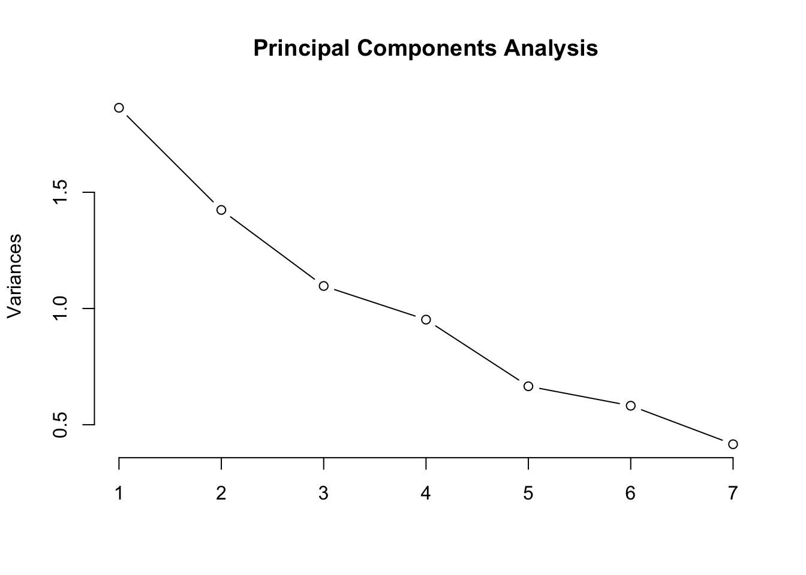

Week 6: Classifying
This Week’s Plan
- Look at running a principal components analysis for authorship
- Work on some models for classifying data
- Discuss how we might evaluate our models
Getting Started
We will be using a of libraries today:
PCA and Authorship
PCAs are often used for reducing dimensions when we have lots of variables but a model might be better suited from combining those variables. PCAs have also been used a fair bit to explore questions of authorship. Here we have a question of authorship using symbolic data taken from scores. We are trying to explore the music of Josquin.
Here we load the data in:
complete_data <- read.csv("attribution_data_new.csv", na.strings=c("","NA"), header=T)
complete_data <- complete_data[,-62]Jesse Rodin’s Josquin Research Project has given levels of security for attribution, including pieces that we know are Josquin’s, those we think might be, and those which are more questionable.
# Josquin attribution level 1 and palestrina
josquin <- complete_data[complete_data$Composer == 'Josquin des Prez',-12]
josquin_secure <- josquin[josquin$Attribution.Level <= 2 ,]
josquin_secure$Composer <- as.character(josquin_secure$Composer)
josquin_less_secure <- josquin[ josquin$Attribution.Level >= 3,]
####Other composers
bach <- complete_data[complete_data$Composer == "Bach_Johann Sebastian",-12]
larue <- complete_data[complete_data$Composer == "la Rue_Pierre de",-12]
palestrina <- complete_data[complete_data$Composer == "Palestrina_Giovanni Perluigi da",-12]
ockeghem <- complete_data[complete_data$Composer == "Johannes Ockeghem",-12]
orto <- complete_data[complete_data$Composer == "de Orto_Marbrianus",-12]
dufay <- complete_data[complete_data$Composer == "Du Fay_Guillaume",-12]
josquin_bach <- rbind(josquin_secure, bach)
josquin_palestrina <- rbind(josquin_secure, palestrina)
josquin_larue <- rbind(josquin_secure, larue)
comparison <- rbind(josquin_secure, bach)columns_wanted <- c(5:11)
Matrix <- comparison[,columns_wanted]
Matrix <- as.matrix(Matrix)
Matrix[is.na(Matrix)] <- 0
# log.pieces <- log(Matrix)
log.pieces <- log(Matrix)Warning in log(Matrix): NaNs producedcomposer <- comparison[,1]This code runs the actual principal components analysis.
It also provides a scree plot, allowing us to see which components are the most heavily weighted. This can allow us to reduce the dimensions as we see fit.
####principle component analysis.
pieces.pca <- prcomp(Matrix,
center = TRUE,
scale. = TRUE)
plot(pieces.pca, type = "l", main="Principal Components Analysis")
It’s worth taking some time to explore what each of these components actually means and how they’re weighted. PCA is weighting instances of parallel motion and similar motion pretty heavily, but negatively weighting pitch entropy and oblique motion. PC2 seems to be looking at nPVI and 9-8 suspensions.
print(pieces.pca)Standard deviations (1, .., p=7):
[1] 1.8907847 0.9923828 0.8705046 0.8298104 0.7104739 0.5567648 0.4230672
Rotation (n x k) = (7 x 7):
PC1 PC2 PC3 PC4 PC5
nPVI_Entire -0.2826479 0.52894566 -0.2336756 0.74429280 -0.17804201
Nine_Eight -0.2553594 0.61806193 0.5670902 -0.41414816 -0.23123893
pitch_correlation -0.3244143 0.05847133 -0.7184471 -0.47933237 -0.36850440
pitch_entropy -0.4038052 0.19724082 -0.1329848 -0.14687309 0.77362200
parallel_motion 0.4444947 0.24809410 -0.1263420 -0.08782873 -0.20277222
similar_motion 0.4682238 0.29107268 -0.1026235 -0.05294267 0.04450771
oblique_motion -0.4120550 -0.38680631 0.2519115 0.11252328 -0.37073657
PC6 PC7
nPVI_Entire 0.006914729 0.001955825
Nine_Eight 0.076657435 -0.018255504
pitch_correlation 0.076213006 0.061699313
pitch_entropy -0.387728754 0.099780551
parallel_motion -0.750907432 -0.334991080
similar_motion 0.016773922 0.824891734
oblique_motion -0.523249921 0.439584522As we can see, about 65% of the variance is accounted for with the first two principal components:
summary(pieces.pca)Importance of components:
PC1 PC2 PC3 PC4 PC5 PC6 PC7
Standard deviation 1.8908 0.9924 0.8705 0.82981 0.71047 0.55676 0.42307
Proportion of Variance 0.5107 0.1407 0.1082 0.09837 0.07211 0.04428 0.02557
Cumulative Proportion 0.5107 0.6514 0.7597 0.85804 0.93015 0.97443 1.00000Plotting our two composers with the first two principal components.
g <- ggbiplot(pieces.pca, obs.scale = 1, var.scale = 1,
groups = composer, ellipse = TRUE,
circle = TRUE)
g <- g + scale_color_discrete(name = '')
g <- g + theme(legend.direction = 'horizontal',
legend.position = 'top') +
theme_bw()
print(g)
# we can change the number of components
# seven_component_model <- data.frame(pieces.pca$x[,1:8])We can also look at how much each of these features is being weighted within the first two components.
theta <- seq(0,2*pi,length.out = 100)
circle <- data.frame(x = cos(theta), y = sin(theta))
p <- ggplot(circle,aes(x,y)) + geom_path()
loadings <- data.frame(pieces.pca$rotation,
.names = row.names(pieces.pca$rotation))
p + geom_text(data=loadings,
mapping=aes(x = PC1, y = PC2, label = .names, colour = .names)) +
coord_fixed(ratio=1) +
labs(x = "PC1", y = "PC2") +
theme_bw()
Classifiers
A classifier is a model that assigns a label to data based on the input. There are many types of classifiers, and we will be evaluating various models throughout the week.
Our goal will be to train a model on the features generally associated with a category, and then test the accuracy of that model. For now, a good starting point might be our Christmas Song question from last week.
Returning to our Christmas Song Problem
First, let’s get the data and add a column that tells us whether it’s a Christmas song or not
### get the data and add yes/no column.
christmas <- get_playlist_audio_features("", "5OP7itTh52BMfZS1DJrdlv")
christmas$christmas <- "yes"
not <- get_playlist_audio_features("", "6i2Qd6OpeRBAzxfscNXeWp")
not$christmas <- "no"
## combine the two datasets and get the columns we want to use.
christmas_subset <-rbind(christmas, not)
christmas_subset <- christmas_subset %>%
select(c("christmas", "acousticness", "liveness", "danceability", "loudness", "speechiness", "valence"))Now we can use the createDataPartition function from the caret library to create a testing and a training dataset. Here, I’ve chosen a 70/30 partition of training and testing, but you can adjust as you see fit.
Train <- createDataPartition(christmas_subset$christmas, p=0.7, list=FALSE)
training <- christmas_subset[ Train, ]
testing <- christmas_subset[ -Train, ]We can pretty easily implement something like a neural network, using our training dataset to train it:
mod_fit <- caret::train(christmas ~ .,
data=training, method="nnet", importance = "christmas")Once we’ve trained this model, we can test it on our testing dataset, and see how well it does:
pred <- predict(mod_fit, testing)
confusionMatrix(pred, as.factor(testing$christmas), positive = "yes")Confusion Matrix and Statistics
Reference
Prediction no yes
no 25 14
yes 9 16
Accuracy : 0.6406
95% CI : (0.511, 0.7568)
No Information Rate : 0.5312
P-Value [Acc > NIR] : 0.0509
Kappa : 0.2713
Mcnemar's Test P-Value : 0.4042
Sensitivity : 0.5333
Specificity : 0.7353
Pos Pred Value : 0.6400
Neg Pred Value : 0.6410
Prevalence : 0.4688
Detection Rate : 0.2500
Detection Prevalence : 0.3906
Balanced Accuracy : 0.6343
'Positive' Class : yes
So what does this all mean? Let’s define some terms.
- Accuracy:
- the accuracy rate. Just how many things it got right.
- 95% CI:
- the confidence interval of the accuracy.
- No information rate:
- given no more information other than the overall distribution, how likely are you to be correct if you just pick the “majority class.”
- if you have an accuracy rate of 80%, but the majority class is 80%, then your model isn’t terribly useful.
- P-Value:
- likelihood of chance.
- Kappa:
- measures the agreement between two raters and ratings. Here it’s looking at the difference between observed accuracy and random chance given the distribution in the dataset.
- McNemar’s Test P-Value:
- this is looking at the two distributions (from a 2x2 table), and determines if they are significantly different,
- Sensitivity:
- given that a result is actually a thing, what is the probability that our model will predict that event’s results?
- Specificity:
- given that a result is not actually a thing, what is the probability that our model will predict that?
- Pos Predictive Value:
- the probability that a predicted ‘positive’ class is actually positive.
- Neg Predictive Value:
- the probability that a predicted ‘negative’ class is actually negative.
- Prevalence:
- the prevalence of the ‘positive event’
- Detection Rate:
- the rate of true events also predicted to be events
- Detection Prevalence
- the prevalence of predicted events
- Balanced Accuracy:
- the average of the proportion corrects of each class individually
What is the model using?
We can look at which features the model is using…
plot(varImp(mod_fit))
Exercise
- Use PCA to explore the works of two artists. How well do they “separate”?
- Run a classifier on two groups (it can be the same two artists, or two distinct groups). How well does your model do?
Wednesday
Today we are going to look at different models and evaluating models. Our research question will be training a model to decipher John Lennon songs from Paul McCartney songs with various classifiers.
John or Paul?
Our research process will follow a simple trajectory:
- Get songs by each artist’s solo career (this can be our ‘ground truth’, as it were).
- Train the model on these pieces, and evaluate the various models.
- Apply the various models to some songs by the Beatles.
Getting the Data
john <- get_artist_audio_features('john lennon')
paul <- get_artist_audio_features('paul mccartney')
both <- rbind(john, paul)What is the balance of pieces like? It looks like we have far more McCartney than Lennon pieces. What does this mean for our model?
table(both$artist_name)
John Lennon Paul McCartney
422 1387 We then can grab only the features that we want to explore for this model.
both_subset <- both %>% select(c("artist_name", "acousticness", "liveness", "danceability", "loudness", "speechiness", "valence"))Before running a clustering, PCA, or a classifier such as a k-nearest neighbor, it’s probably good to standardize your data. This means that the data is consistent, and prevents wide ranges from dominating the results. Here we’ve scaled all of our data with the z-score of the data according with the rest of the data for that category.
I’ve also (temporarily) split the data from the artist, and then brought it all back together with cbind.
data <- both_subset[,-1]
artists <- both_subset[,1]
data <- data %>% mutate_all(~(scale(.) %>% as.vector))
both_artists <- cbind(artists, data)Cross-Validation
Cross-validation splits the data up into a testing and training set, and evaluates it.
K-folds cross validation:
K refers to the number of groups that data is split into.
- It randomizes the data
- splits it into the specified number of groups
- for each group, split into a training and testing set, and then evaluate
ctrl <- trainControl(method = "repeatedcv", number = 2, savePredictions = TRUE)Train <- createDataPartition(both_artists$artists, p=0.7, list=FALSE)
training <- both_artists[ Train, ]
testing <- both_artists[ -Train, ]Let’s look at our results with a logistic regression:
mod_fit <- train(artists ~ ., data=both_artists, method="glm", family="binomial",
trControl = ctrl, tuneLength = 10)
testing$artists <- as.factor(testing$artists)
pred <- predict(mod_fit, newdata=testing)
confusionMatrix(data=pred, testing$artists)Confusion Matrix and Statistics
Reference
Prediction John Lennon Paul McCartney
John Lennon 11 14
Paul McCartney 115 402
Accuracy : 0.762
95% CI : (0.7238, 0.7973)
No Information Rate : 0.7675
P-Value [Acc > NIR] : 0.642
Kappa : 0.0744
Mcnemar's Test P-Value : <2e-16
Sensitivity : 0.08730
Specificity : 0.96635
Pos Pred Value : 0.44000
Neg Pred Value : 0.77756
Prevalence : 0.23247
Detection Rate : 0.02030
Detection Prevalence : 0.04613
Balanced Accuracy : 0.52682
'Positive' Class : John Lennon
It looks like the accuracy is about 76%, but pay attention to the sensitivity and the specificity values.
Recall that sensitivity is a measurement of how well the model can detect a “positive” instance, and specificity measures how well the model is finding true negatives.
Sensitivity can be defined as follows:
Sensitivity = (True Positive)/(True Positive + False Negative)
and specificity can be defined as follows:
Specificity = (True Negative)/(True Negative + False Positive)
So this model is quite good at finding the negative class (here defined as McCartney), but not great at finding the positive class (Lennon).
Other Models
Let’s run the same code again, but now with a k-nearest neighbor. For our sanity, let’s put it into a function.
model_evaluation <- function(method){
Train <- createDataPartition(both_artists$artists, p=0.7, list=FALSE)
training <- both_artists[ Train, ]
testing <- both_artists[ -Train, ]
mod_fit <- train(artists ~ .,
data=training, method=method)
pred <- predict(mod_fit, newdata=testing)
accuracy <- table(pred, testing[,"artists"])
sum(diag(accuracy))/sum(accuracy)
testing$artists <- as.factor(testing$artists)
confusionMatrix(data=pred, testing$artists)
}
model_evaluation("kknn")Confusion Matrix and Statistics
Reference
Prediction John Lennon Paul McCartney
John Lennon 51 33
Paul McCartney 75 383
Accuracy : 0.8007
95% CI : (0.7646, 0.8336)
No Information Rate : 0.7675
P-Value [Acc > NIR] : 0.03586
Kappa : 0.3682
Mcnemar's Test P-Value : 7.972e-05
Sensitivity : 0.4048
Specificity : 0.9207
Pos Pred Value : 0.6071
Neg Pred Value : 0.8362
Prevalence : 0.2325
Detection Rate : 0.0941
Detection Prevalence : 0.1550
Balanced Accuracy : 0.6627
'Positive' Class : John Lennon
Note that it performs quite well! It’s better at finding the “John Lennon” model.
Why do we think this model performed better? A comparison of models can be found here.
Neural Net
A neural net doesn’t seem to do as well.
model_evaluation("nnet")Comparing Models
- Logistic Regression
- K-nearest neighbor
- neural net
- Learning Vector Quantization
- gradient boosted machine
- support vector machine
We can train different models explicitly (without a function) for now.
set.seed(1234)
control <- trainControl(method="repeatedcv", number=10, repeats=3)
# train logistic regression
modelglm <- train(artists ~ ., data=both_artists, method="glm", trControl=control)
# train knn
modelknn <- train(artists ~ ., data=both_artists, method="kknn", trControl=control)
# train nnet
modelnnet <- train(artists ~ ., data=both_artists, method="nnet", trControl=control)
# train the LVQ model
modelLvq <- train(artists ~ ., data=both_artists, method="lvq", trControl=control)
# train the GBM model
set.seed(7)
modelGbm <- train(artists ~ ., data=both_artists, method="gbm", trControl=control)
# train the SVM model
set.seed(7)
modelSvm <- train(artists ~., data=both_artists, method="svmRadial", trControl=control)
# train the random forest
randomforest <- train(artists~., data=both_artists, method="ranger", trControl=control)We can actually look at the resampling of the dataset for each model, and get the results for each model:
# collect resamples
results <- resamples(list(LVQ=modelLvq, GBM=modelGbm, SVM=modelSvm,knn=modelknn, nnet=modelnnet, glm=modelglm, rf=randomforest))
# summarize the distributions
summary(results)
Call:
summary.resamples(object = results)
Models: LVQ, GBM, SVM, knn, nnet, glm, rf
Number of resamples: 30
Accuracy
Min. 1st Qu. Median Mean 3rd Qu. Max. NA's
LVQ 0.6850829 0.7555556 0.7645488 0.7617583 0.7734807 0.7888889 0
GBM 0.7845304 0.8088079 0.8254911 0.8229457 0.8395565 0.8508287 0
SVM 0.7679558 0.7790055 0.7900552 0.7888529 0.7988950 0.8111111 0
knn 0.7833333 0.8179300 0.8397790 0.8361661 0.8506215 0.8895028 0
nnet 0.7403315 0.7725368 0.7873016 0.7936387 0.8099908 0.8500000 0
glm 0.7458564 0.7572400 0.7624309 0.7658017 0.7734807 0.7900552 0
rf 0.8111111 0.8613029 0.8729282 0.8697308 0.8893493 0.9060773 0
Kappa
Min. 1st Qu. Median Mean 3rd Qu. Max. NA's
LVQ -0.009392427 0.02663193 0.07100195 0.07419685 0.1190372 0.1670796 0
GBM 0.248634477 0.36345672 0.42324938 0.41069041 0.4661853 0.5403931 0
SVM 0.071114370 0.15186812 0.19162277 0.19665202 0.2298367 0.3126685 0
knn 0.389352818 0.47400876 0.52339123 0.52601569 0.5683450 0.6899623 0
nnet 0.091489847 0.25010786 0.30093890 0.32095848 0.4082260 0.5212766 0
glm 0.000000000 0.02688172 0.07086253 0.06823155 0.1020063 0.1595797 0
rf 0.413793103 0.55728402 0.60804017 0.58941910 0.6453960 0.7041763 0It might be better to look at the accuracy for each model. Here we have the accuracy rating as well as Cohen’s Kappa, which is like accuracy but also incorporates the imbalance of the dataset.
# boxplots of results
bwplot(results)Here’s another plot:
# dot plots of results
dotplot(results)
Is it possible to use this for a research question??
What if we use our neural net model but on a different dataset? How about the beatles dataset that is available on Spotify (which admittedly isn’t as much as we’d like).
Grabbing Beatles Data
We can start by getting the data from Spotify:
beatles <- get_artist_audio_features('the beatles')
beatles_subset <- beatles %>% select(c("artist_name", "acousticness", "energy", "instrumentalness", "liveness", "danceability", "loudness", "speechiness", "valence"))Predicting
Now we can use the models that we’ve trained, but on new data. Here we use the random forest and the k-nearest neighbor models.
beatles_knn <- predict(modelknn, newdata=beatles_subset)
beatles_rf <- predict(randomforest, newdata=beatles_subset)Now, we are going to create a data frame of the track name, and both models.
classified_data <- as.data.frame(cbind(beatles_knn, beatles_rf, beatles$track_name))This returns data as either 1 or 2, so we can clean up the columns a bit. Here, if it’s a 2, I label it as “Paul”, otherwise, it’s a “John”.
classified_data$beatles_knn <- if_else(classified_data$beatles_knn == 2, "Paul", "John")
classified_data$beatles_rf<- if_else(classified_data$beatles_rf == 2, "Paul", "John")With the caret package, we can extract the probabilities of each guess. We can also add track info here as needed:
probabilities <- extractProb(list(modelnnet), unkX = beatles_subset)
colnames(classified_data)[3] <- "track"
probability_data <- cbind(probabilities[,1:2], classified_data)
probability_data %>% datatable(filter ="top") (Note that this table doesn’t seem to be rendering correctly when pushed online).
Summary
What I like about this is that we can take something about authorship that we know, and then use it to explore authorship of things that are a little more ambiguous. It can also teach us a fair bit about the specific models. Why do we think some performed so much better than others?
Exercise:
Let’s try to build an east/west coast rap classifier:
Steps!:
- Grab data
- partition and train model
- compare models
- use it to predict a new dataset.
east_coast <- get_playlist_audio_features("", "3pu8tsqTW52aUtYFZN3g4A")
east_coast$coast <- "east"
west_coast <- get_playlist_audio_features("", "6lAOSVxxvGuEhPtZguaeav")
west_coast$coast <- "west"
both <- rbind(east_coast, west_coast)
####standardize and clean a bit
both <- both %>% select(c("coast", "acousticness", "energy", "instrumentalness", "liveness", "danceability", "loudness", "speechiness", "valence"))
data <- both[,-1]
coast <- both[,1]
data <- data %>% mutate_all(~(scale(.) %>% as.vector))
both <- cbind(coast, data)
set.seed(1234)
control <- trainControl(method="repeatedcv", number=10, repeats=3)
# train logistic regression
modelglm <- train(coast ~ ., data=both, method="glm", trControl=control)
# train knn
modelknn <- train(coast ~ ., data=both, method="kknn", trControl=control)
# train nnet
modelnnet <- train(coast ~ ., data=both, method="nnet", trControl=control)# weights: 11
initial value 179.713406
iter 10 value 139.274270
iter 20 value 138.418159
iter 30 value 138.311368
final value 138.294899
converged
# weights: 31
initial value 159.063233
iter 10 value 136.332036
iter 20 value 126.730188
iter 30 value 119.138385
iter 40 value 114.350246
iter 50 value 110.525689
iter 60 value 109.317970
iter 70 value 109.034288
iter 80 value 109.025799
iter 90 value 109.024934
final value 109.024850
converged
# weights: 51
initial value 180.830976
iter 10 value 133.260420
iter 20 value 118.436490
iter 30 value 104.516811
iter 40 value 97.422974
iter 50 value 95.549203
iter 60 value 95.406004
iter 70 value 95.404046
final value 95.404045
converged
# weights: 11
initial value 160.997220
iter 10 value 140.103830
iter 20 value 139.649981
final value 139.649000
converged
# weights: 31
initial value 183.358389
iter 10 value 138.135160
iter 20 value 133.504773
iter 30 value 132.232569
iter 40 value 131.823810
iter 50 value 131.813630
iter 50 value 131.813629
iter 50 value 131.813629
final value 131.813629
converged
# weights: 51
initial value 188.375733
iter 10 value 137.715389
iter 20 value 133.857201
iter 30 value 127.299427
iter 40 value 122.821534
iter 50 value 122.276359
iter 60 value 122.234125
iter 70 value 122.231352
final value 122.231336
converged
# weights: 11
initial value 184.044708
iter 10 value 138.367892
iter 20 value 137.987598
iter 30 value 136.782436
iter 40 value 134.813322
iter 50 value 134.429955
iter 60 value 134.318182
iter 70 value 134.314470
iter 80 value 134.311792
iter 90 value 134.306794
iter 100 value 134.293605
final value 134.293605
stopped after 100 iterations
# weights: 31
initial value 161.912438
iter 10 value 138.527760
iter 20 value 132.896082
iter 30 value 120.564804
iter 40 value 116.472165
iter 50 value 114.106373
iter 60 value 113.931795
iter 70 value 113.703512
iter 80 value 113.583707
iter 90 value 113.522543
iter 100 value 113.334040
final value 113.334040
stopped after 100 iterations
# weights: 51
initial value 163.530519
iter 10 value 135.397425
iter 20 value 117.760201
iter 30 value 98.757667
iter 40 value 90.530530
iter 50 value 85.899673
iter 60 value 85.639340
iter 70 value 85.567108
iter 80 value 85.461082
iter 90 value 85.337051
iter 100 value 85.329269
final value 85.329269
stopped after 100 iterations
# weights: 11
initial value 179.506932
iter 10 value 137.970252
iter 20 value 137.646657
iter 30 value 137.290045
iter 40 value 135.628243
iter 50 value 134.060107
iter 60 value 134.054853
final value 134.054593
converged
# weights: 31
initial value 162.801024
iter 10 value 136.586035
iter 20 value 122.061440
iter 30 value 112.709036
iter 40 value 105.942660
iter 50 value 104.607989
iter 60 value 104.550472
final value 104.550340
converged
# weights: 51
initial value 162.840044
iter 10 value 133.804152
iter 20 value 122.210161
iter 30 value 107.034765
iter 40 value 97.298628
iter 50 value 95.311873
iter 60 value 95.178014
iter 70 value 95.175154
final value 95.175133
converged
# weights: 11
initial value 172.786887
iter 10 value 142.144810
iter 20 value 139.504127
final value 139.499624
converged
# weights: 31
initial value 162.282873
iter 10 value 138.859534
iter 20 value 136.843247
iter 30 value 135.628344
iter 40 value 135.496862
final value 135.495788
converged
# weights: 51
initial value 159.568153
iter 10 value 138.887708
iter 20 value 133.007936
iter 30 value 125.811940
iter 40 value 123.319577
iter 50 value 122.654103
iter 60 value 122.410055
iter 70 value 122.392654
final value 122.391815
converged
# weights: 11
initial value 227.394362
iter 10 value 145.684059
iter 20 value 141.780969
iter 30 value 138.889227
iter 40 value 138.764292
iter 50 value 138.719265
iter 60 value 136.671320
iter 70 value 136.099361
iter 80 value 136.067891
iter 90 value 136.060026
iter 100 value 136.055339
final value 136.055339
stopped after 100 iterations
# weights: 31
initial value 163.796501
iter 10 value 136.031707
iter 20 value 122.770172
iter 30 value 117.282544
iter 40 value 116.151263
iter 50 value 116.017031
iter 60 value 115.982232
iter 70 value 115.924025
iter 80 value 115.869099
iter 90 value 115.850331
iter 100 value 115.797430
final value 115.797430
stopped after 100 iterations
# weights: 51
initial value 168.938205
iter 10 value 134.137211
iter 20 value 115.865328
iter 30 value 102.191187
iter 40 value 98.907005
iter 50 value 95.491122
iter 60 value 95.082852
iter 70 value 94.871496
iter 80 value 94.699871
iter 90 value 94.283373
iter 100 value 94.098959
final value 94.098959
stopped after 100 iterations
# weights: 11
initial value 209.149800
iter 10 value 143.053952
iter 20 value 139.006978
iter 30 value 138.965950
iter 40 value 135.981395
iter 50 value 135.626680
iter 60 value 135.624187
iter 70 value 135.622937
iter 70 value 135.622937
final value 135.622937
converged
# weights: 31
initial value 171.706598
iter 10 value 137.283422
iter 20 value 131.926435
iter 30 value 122.643111
iter 40 value 118.227293
iter 50 value 116.775266
iter 60 value 111.365769
iter 70 value 110.602586
iter 80 value 110.502305
iter 90 value 110.427176
iter 100 value 110.112560
final value 110.112560
stopped after 100 iterations
# weights: 51
initial value 197.280762
iter 10 value 135.837539
iter 20 value 121.848493
iter 30 value 107.636327
iter 40 value 101.682352
iter 50 value 99.657649
iter 60 value 95.500436
iter 70 value 94.331351
iter 80 value 94.302994
iter 90 value 94.302073
final value 94.302069
converged
# weights: 11
initial value 160.483879
iter 10 value 142.714774
iter 20 value 141.077035
iter 30 value 140.882819
final value 140.881232
converged
# weights: 31
initial value 166.601724
iter 10 value 139.006468
iter 20 value 135.760186
iter 30 value 134.678546
iter 40 value 134.194038
iter 50 value 134.164016
final value 134.163997
converged
# weights: 51
initial value 166.890655
iter 10 value 140.817858
iter 20 value 136.191013
iter 30 value 132.232099
iter 40 value 131.138807
iter 50 value 129.909766
iter 60 value 129.352231
iter 70 value 129.169821
iter 80 value 129.159334
final value 129.159301
converged
# weights: 11
initial value 178.516491
iter 10 value 140.111926
iter 20 value 139.024288
iter 30 value 138.976948
iter 40 value 136.754672
iter 50 value 136.533183
iter 60 value 136.370358
iter 70 value 136.331510
iter 80 value 136.328674
iter 90 value 136.327950
iter 100 value 136.326126
final value 136.326126
stopped after 100 iterations
# weights: 31
initial value 160.121464
iter 10 value 136.538567
iter 20 value 126.361109
iter 30 value 118.613099
iter 40 value 116.316348
iter 50 value 115.910778
iter 60 value 115.852292
iter 70 value 115.754953
iter 80 value 115.731127
iter 90 value 115.697254
iter 100 value 115.678638
final value 115.678638
stopped after 100 iterations
# weights: 51
initial value 165.226667
iter 10 value 136.842955
iter 20 value 124.877308
iter 30 value 112.642368
iter 40 value 100.743099
iter 50 value 99.533481
iter 60 value 99.441176
iter 70 value 99.385135
iter 80 value 99.326497
iter 90 value 99.252275
iter 100 value 99.177754
final value 99.177754
stopped after 100 iterations
# weights: 11
initial value 213.104004
iter 10 value 140.199463
iter 20 value 139.576207
iter 30 value 137.322258
iter 40 value 135.241842
iter 50 value 134.322859
iter 60 value 134.269538
iter 70 value 134.261580
iter 80 value 134.258660
iter 90 value 134.064392
iter 100 value 133.670879
final value 133.670879
stopped after 100 iterations
# weights: 31
initial value 161.865379
iter 10 value 139.751517
iter 20 value 131.801229
iter 30 value 122.854584
iter 40 value 116.644115
iter 50 value 116.320947
iter 60 value 116.316760
final value 116.316755
converged
# weights: 51
initial value 162.573078
iter 10 value 131.870883
iter 20 value 112.170607
iter 30 value 100.847820
iter 40 value 95.371014
iter 50 value 89.976699
iter 60 value 89.195852
iter 70 value 89.051934
iter 80 value 88.946802
iter 90 value 88.736371
iter 100 value 88.425572
final value 88.425572
stopped after 100 iterations
# weights: 11
initial value 191.374109
iter 10 value 142.619027
iter 20 value 141.754410
final value 141.752217
converged
# weights: 31
initial value 160.527288
iter 10 value 142.278147
iter 20 value 139.405239
iter 30 value 136.654675
iter 40 value 135.677475
iter 50 value 135.247570
iter 60 value 135.193250
iter 70 value 134.989266
iter 80 value 134.589903
iter 90 value 134.577755
iter 90 value 134.577754
iter 90 value 134.577754
final value 134.577754
converged
# weights: 51
initial value 168.921008
iter 10 value 139.050284
iter 20 value 135.370327
iter 30 value 129.473189
iter 40 value 127.682591
iter 50 value 125.500818
iter 60 value 124.951181
iter 70 value 124.748899
iter 80 value 124.734874
final value 124.734714
converged
# weights: 11
initial value 173.675872
iter 10 value 142.732003
iter 20 value 139.426080
iter 30 value 135.432780
iter 40 value 135.169714
iter 50 value 135.142446
iter 60 value 135.103959
iter 70 value 135.088078
iter 80 value 135.079005
final value 135.078999
converged
# weights: 31
initial value 210.396138
iter 10 value 135.342801
iter 20 value 124.368749
iter 30 value 119.571781
iter 40 value 119.203721
iter 50 value 119.078813
iter 60 value 119.012281
iter 70 value 118.997014
iter 80 value 118.971654
iter 90 value 118.936224
iter 100 value 116.825862
final value 116.825862
stopped after 100 iterations
# weights: 51
initial value 184.677163
iter 10 value 134.100112
iter 20 value 118.392853
iter 30 value 104.115461
iter 40 value 98.682711
iter 50 value 96.908988
iter 60 value 96.071214
iter 70 value 95.574754
iter 80 value 95.242041
iter 90 value 94.816766
iter 100 value 94.757510
final value 94.757510
stopped after 100 iterations
# weights: 11
initial value 172.278040
iter 10 value 138.203789
iter 20 value 133.404888
iter 30 value 132.766527
iter 40 value 132.172883
iter 50 value 131.900267
iter 60 value 131.819210
iter 70 value 131.574998
iter 80 value 131.573080
iter 90 value 131.506629
iter 100 value 131.479077
final value 131.479077
stopped after 100 iterations
# weights: 31
initial value 175.782901
iter 10 value 130.165434
iter 20 value 118.981631
iter 30 value 109.802911
iter 40 value 106.231973
iter 50 value 103.878418
iter 60 value 103.782520
final value 103.782330
converged
# weights: 51
initial value 158.969842
iter 10 value 125.557857
iter 20 value 106.694682
iter 30 value 93.753454
iter 40 value 85.325967
iter 50 value 79.053747
iter 60 value 78.007393
iter 70 value 77.873553
iter 80 value 77.759841
iter 90 value 77.724905
iter 100 value 77.707215
final value 77.707215
stopped after 100 iterations
# weights: 11
initial value 163.718986
iter 10 value 135.759288
iter 20 value 135.096530
final value 135.091882
converged
# weights: 31
initial value 162.804409
iter 10 value 132.873090
iter 20 value 128.688435
iter 30 value 128.377188
iter 40 value 128.368205
final value 128.368176
converged
# weights: 51
initial value 159.843967
iter 10 value 131.070641
iter 20 value 123.919180
iter 30 value 117.729124
iter 40 value 116.201406
iter 50 value 115.729271
iter 60 value 115.689759
iter 70 value 115.687639
final value 115.687630
converged
# weights: 11
initial value 227.548862
iter 10 value 134.924409
iter 20 value 133.318694
iter 30 value 132.486381
iter 40 value 132.220948
iter 50 value 131.710555
iter 60 value 131.626297
iter 70 value 131.584002
iter 80 value 131.557200
iter 90 value 131.556912
iter 90 value 131.556911
iter 90 value 131.556911
final value 131.556911
converged
# weights: 31
initial value 191.239772
iter 10 value 129.081148
iter 20 value 120.608759
iter 30 value 115.350887
iter 40 value 112.488760
iter 50 value 111.840081
iter 60 value 111.295902
iter 70 value 111.177832
iter 80 value 111.059110
iter 90 value 110.825157
iter 100 value 110.519145
final value 110.519145
stopped after 100 iterations
# weights: 51
initial value 165.458685
iter 10 value 130.787917
iter 20 value 112.820324
iter 30 value 97.869772
iter 40 value 89.474738
iter 50 value 81.219272
iter 60 value 79.136512
iter 70 value 78.932527
iter 80 value 78.883020
iter 90 value 78.845330
iter 100 value 78.746223
final value 78.746223
stopped after 100 iterations
# weights: 11
initial value 162.055938
iter 10 value 140.589535
iter 20 value 140.072731
iter 30 value 139.934847
iter 40 value 139.897693
iter 50 value 139.888327
final value 139.888302
converged
# weights: 31
initial value 177.576410
iter 10 value 136.595687
iter 20 value 130.478324
iter 30 value 120.010050
iter 40 value 116.672710
iter 50 value 116.438731
final value 116.438040
converged
# weights: 51
initial value 174.292085
iter 10 value 137.714523
iter 20 value 125.522290
iter 30 value 107.084484
iter 40 value 95.305070
iter 50 value 91.426701
iter 60 value 91.105481
iter 70 value 91.098087
final value 91.098030
converged
# weights: 11
initial value 211.564194
iter 10 value 141.501721
iter 20 value 141.399229
final value 141.398724
converged
# weights: 31
initial value 160.131240
iter 10 value 140.891852
iter 20 value 137.304058
iter 30 value 134.735777
iter 40 value 133.688406
iter 50 value 133.588249
final value 133.588185
converged
# weights: 51
initial value 171.501655
iter 10 value 139.596755
iter 20 value 131.067752
iter 30 value 126.421477
iter 40 value 126.057469
iter 50 value 125.089448
iter 60 value 124.977675
iter 70 value 124.956850
final value 124.956412
converged
# weights: 11
initial value 170.905104
iter 10 value 140.241009
iter 20 value 140.059992
iter 30 value 139.973805
iter 40 value 139.896534
iter 50 value 139.891493
iter 60 value 139.890571
final value 139.890465
converged
# weights: 31
initial value 169.542161
iter 10 value 136.542952
iter 20 value 126.030673
iter 30 value 118.378674
iter 40 value 115.065697
iter 50 value 114.963238
iter 60 value 114.930833
iter 70 value 114.914701
iter 80 value 114.884295
iter 90 value 114.766143
iter 100 value 114.725576
final value 114.725576
stopped after 100 iterations
# weights: 51
initial value 184.485265
iter 10 value 138.103760
iter 20 value 119.882299
iter 30 value 103.685543
iter 40 value 95.462899
iter 50 value 91.187148
iter 60 value 90.780603
iter 70 value 90.681210
iter 80 value 90.518048
iter 90 value 90.398916
iter 100 value 90.297934
final value 90.297934
stopped after 100 iterations
# weights: 11
initial value 171.592321
iter 10 value 140.781938
iter 20 value 140.422259
iter 30 value 140.289618
iter 40 value 140.131506
iter 50 value 140.103460
iter 60 value 138.035852
final value 137.724228
converged
# weights: 31
initial value 164.460259
iter 10 value 140.543957
iter 20 value 136.226058
iter 30 value 128.977413
iter 40 value 122.608601
iter 50 value 116.566615
iter 60 value 114.686383
iter 70 value 114.184220
iter 80 value 113.881354
iter 90 value 113.695505
iter 100 value 113.668043
final value 113.668043
stopped after 100 iterations
# weights: 51
initial value 161.403042
iter 10 value 136.865772
iter 20 value 126.108083
iter 30 value 116.241422
iter 40 value 111.907289
iter 50 value 111.682080
iter 60 value 111.657440
final value 111.657247
converged
# weights: 11
initial value 182.278156
iter 10 value 141.824502
iter 20 value 141.658782
final value 141.658742
converged
# weights: 31
initial value 190.329850
iter 10 value 139.801605
iter 20 value 135.845564
iter 30 value 135.443615
iter 40 value 135.084678
iter 50 value 134.996332
final value 134.996052
converged
# weights: 51
initial value 212.318761
iter 10 value 140.380880
iter 20 value 134.225340
iter 30 value 128.598883
iter 40 value 127.470551
iter 50 value 126.069289
iter 60 value 125.915148
iter 70 value 125.912537
final value 125.912530
converged
# weights: 11
initial value 190.986317
iter 10 value 140.797753
iter 20 value 139.271855
iter 30 value 138.339032
iter 40 value 138.038192
iter 50 value 137.834263
iter 60 value 137.437737
iter 70 value 137.432604
iter 80 value 137.427188
iter 90 value 137.425442
iter 100 value 137.424602
final value 137.424602
stopped after 100 iterations
# weights: 31
initial value 163.115806
iter 10 value 136.900695
iter 20 value 129.052346
iter 30 value 119.348552
iter 40 value 117.912775
iter 50 value 115.451590
iter 60 value 115.105045
iter 70 value 114.274047
iter 80 value 113.884471
iter 90 value 113.860675
iter 100 value 113.841186
final value 113.841186
stopped after 100 iterations
# weights: 51
initial value 165.005277
iter 10 value 133.585182
iter 20 value 120.341988
iter 30 value 110.776771
iter 40 value 105.623942
iter 50 value 105.049834
iter 60 value 104.943054
iter 70 value 104.853483
iter 80 value 104.696672
iter 90 value 104.530329
iter 100 value 104.426164
final value 104.426164
stopped after 100 iterations
# weights: 11
initial value 200.313719
iter 10 value 139.350658
iter 20 value 136.098793
iter 30 value 134.191895
iter 40 value 133.963233
iter 50 value 133.953509
iter 60 value 133.941539
iter 70 value 133.040667
iter 80 value 133.019420
iter 90 value 132.967278
iter 100 value 132.957064
final value 132.957064
stopped after 100 iterations
# weights: 31
initial value 164.684300
iter 10 value 137.563149
iter 20 value 127.532291
iter 30 value 124.122823
iter 40 value 123.789976
iter 50 value 123.787727
iter 50 value 123.787725
iter 50 value 123.787725
final value 123.787725
converged
# weights: 51
initial value 159.570397
iter 10 value 138.379599
iter 20 value 126.041458
iter 30 value 110.774525
iter 40 value 103.415620
iter 50 value 102.669115
iter 60 value 102.667208
final value 102.667201
converged
# weights: 11
initial value 158.727093
iter 10 value 143.737524
iter 20 value 141.397593
iter 30 value 140.828659
final value 140.826885
converged
# weights: 31
initial value 159.780949
iter 10 value 140.310630
iter 20 value 138.052977
iter 30 value 135.245764
iter 40 value 134.695327
iter 50 value 134.660598
final value 134.660031
converged
# weights: 51
initial value 232.326623
iter 10 value 138.591008
iter 20 value 133.583988
iter 30 value 129.609159
iter 40 value 128.010409
iter 50 value 127.132771
iter 60 value 126.891068
final value 126.889661
converged
# weights: 11
initial value 173.357705
iter 10 value 140.184672
iter 20 value 138.776170
iter 30 value 136.417203
iter 40 value 135.751818
iter 50 value 135.727716
iter 60 value 135.727622
final value 135.727374
converged
# weights: 31
initial value 163.383543
iter 10 value 139.610489
iter 20 value 128.071009
iter 30 value 119.613759
iter 40 value 114.206623
iter 50 value 113.179046
iter 60 value 113.043883
iter 70 value 113.024941
iter 80 value 113.020857
iter 90 value 113.009616
iter 100 value 113.000503
final value 113.000503
stopped after 100 iterations
# weights: 51
initial value 238.940138
iter 10 value 134.952253
iter 20 value 114.937840
iter 30 value 102.695858
iter 40 value 96.296091
iter 50 value 95.023270
iter 60 value 94.796545
iter 70 value 94.690275
iter 80 value 94.625081
iter 90 value 94.533119
iter 100 value 94.456990
final value 94.456990
stopped after 100 iterations
# weights: 11
initial value 165.027060
iter 10 value 139.875130
iter 20 value 139.077223
iter 30 value 138.971226
iter 40 value 138.970471
iter 40 value 138.970470
iter 40 value 138.970470
final value 138.970470
converged
# weights: 31
initial value 179.225982
iter 10 value 135.469367
iter 20 value 120.012899
iter 30 value 115.696459
iter 40 value 110.558677
iter 50 value 106.791605
iter 60 value 106.244906
final value 106.243952
converged
# weights: 51
initial value 167.807338
iter 10 value 135.034359
iter 20 value 114.510593
iter 30 value 101.278542
iter 40 value 91.645607
iter 50 value 85.392046
iter 60 value 84.012795
iter 70 value 83.949672
iter 80 value 83.949243
iter 80 value 83.949242
iter 80 value 83.949242
final value 83.949242
converged
# weights: 11
initial value 174.279384
iter 10 value 145.451949
iter 20 value 140.834317
iter 30 value 140.532603
final value 140.531101
converged
# weights: 31
initial value 161.342593
iter 10 value 140.593117
iter 20 value 138.779082
iter 30 value 136.503457
iter 40 value 135.335674
iter 50 value 134.466010
iter 60 value 134.048104
iter 70 value 133.993586
final value 133.993574
converged
# weights: 51
initial value 168.037064
iter 10 value 138.323100
iter 20 value 134.352953
iter 30 value 132.511169
iter 40 value 131.902917
iter 50 value 131.199685
iter 60 value 129.261727
iter 70 value 127.711129
iter 80 value 127.611576
iter 90 value 127.609367
final value 127.609363
converged
# weights: 11
initial value 194.152603
iter 10 value 139.425041
iter 20 value 139.137106
iter 30 value 139.054512
iter 40 value 139.039935
iter 50 value 138.774238
iter 60 value 137.404061
iter 70 value 137.247646
iter 80 value 137.239981
final value 137.238340
converged
# weights: 31
initial value 158.266381
iter 10 value 132.791252
iter 20 value 124.811292
iter 30 value 118.036323
iter 40 value 112.974656
iter 50 value 112.447767
iter 60 value 112.261851
iter 70 value 112.193535
iter 80 value 111.616625
iter 90 value 111.464448
iter 100 value 111.349567
final value 111.349567
stopped after 100 iterations
# weights: 51
initial value 165.468073
iter 10 value 133.687798
iter 20 value 122.590838
iter 30 value 111.973761
iter 40 value 105.859130
iter 50 value 97.431079
iter 60 value 94.452660
iter 70 value 94.153811
iter 80 value 94.079744
iter 90 value 93.998486
iter 100 value 93.850135
final value 93.850135
stopped after 100 iterations
# weights: 11
initial value 165.014561
iter 10 value 137.899484
iter 20 value 136.232056
iter 30 value 134.549308
iter 40 value 134.513446
iter 50 value 134.508829
iter 60 value 134.500676
iter 70 value 134.401937
iter 80 value 134.340127
iter 90 value 134.330952
iter 100 value 134.324818
final value 134.324818
stopped after 100 iterations
# weights: 31
initial value 160.203566
iter 10 value 132.832429
iter 20 value 122.158532
iter 30 value 115.134376
iter 40 value 109.170960
iter 50 value 108.128700
iter 60 value 108.115362
final value 108.115353
converged
# weights: 51
initial value 250.231304
iter 10 value 135.167939
iter 20 value 120.744735
iter 30 value 111.907151
iter 40 value 97.843055
iter 50 value 89.226454
iter 60 value 83.736963
iter 70 value 81.527434
iter 80 value 81.198832
iter 90 value 81.197683
iter 90 value 81.197682
iter 90 value 81.197682
final value 81.197682
converged
# weights: 11
initial value 190.116711
iter 10 value 142.070813
iter 20 value 140.747631
final value 140.745228
converged
# weights: 31
initial value 161.641477
iter 10 value 139.415694
iter 20 value 134.327968
iter 30 value 132.965416
iter 40 value 132.859049
iter 50 value 132.858283
iter 50 value 132.858282
iter 50 value 132.858282
final value 132.858282
converged
# weights: 51
initial value 157.243854
iter 10 value 138.879049
iter 20 value 132.686310
iter 30 value 130.953890
iter 40 value 128.504956
iter 50 value 128.118506
iter 60 value 128.097075
iter 70 value 128.095948
iter 80 value 128.094710
iter 90 value 128.087408
iter 100 value 128.051531
final value 128.051531
stopped after 100 iterations
# weights: 11
initial value 179.029806
iter 10 value 139.357902
iter 20 value 138.341402
iter 30 value 138.004403
iter 40 value 136.193411
iter 50 value 135.997240
iter 60 value 135.663070
iter 70 value 135.662275
iter 80 value 135.662003
iter 90 value 135.661573
iter 100 value 135.661147
final value 135.661147
stopped after 100 iterations
# weights: 31
initial value 188.396607
iter 10 value 137.597390
iter 20 value 126.095361
iter 30 value 122.394763
iter 40 value 121.749206
iter 50 value 121.656930
iter 60 value 121.447927
iter 70 value 121.391625
iter 80 value 121.329699
iter 90 value 121.294809
iter 100 value 121.262329
final value 121.262329
stopped after 100 iterations
# weights: 51
initial value 211.304252
iter 10 value 133.154680
iter 20 value 119.582469
iter 30 value 109.802660
iter 40 value 106.671920
iter 50 value 106.129939
iter 60 value 106.034590
iter 70 value 106.018875
iter 80 value 106.001439
iter 90 value 105.984382
iter 100 value 105.969542
final value 105.969542
stopped after 100 iterations
# weights: 11
initial value 159.878783
iter 10 value 141.053876
iter 20 value 140.741966
iter 30 value 138.104921
iter 40 value 137.425453
iter 50 value 137.421048
iter 60 value 137.419952
final value 137.419355
converged
# weights: 31
initial value 162.328277
iter 10 value 139.682112
iter 20 value 130.505981
iter 30 value 120.717799
iter 40 value 112.203372
iter 50 value 109.695482
iter 60 value 109.666428
final value 109.666397
converged
# weights: 51
initial value 240.785893
iter 10 value 132.634613
iter 20 value 118.844433
iter 30 value 107.335508
iter 40 value 99.729768
iter 50 value 95.095891
iter 60 value 94.632741
iter 70 value 94.629487
final value 94.629481
converged
# weights: 11
initial value 168.785632
iter 10 value 143.488428
iter 20 value 140.813386
iter 30 value 140.626454
final value 140.621415
converged
# weights: 31
initial value 162.191817
iter 10 value 142.182906
iter 20 value 139.047756
iter 30 value 137.108331
iter 40 value 135.690700
iter 50 value 134.829325
iter 60 value 134.526339
iter 70 value 134.394948
iter 80 value 134.374081
iter 90 value 134.371950
final value 134.371795
converged
# weights: 51
initial value 171.847601
iter 10 value 140.190920
iter 20 value 131.645432
iter 30 value 128.515127
iter 40 value 127.791904
iter 50 value 127.697450
iter 60 value 127.372297
iter 70 value 127.281962
iter 80 value 127.277110
iter 80 value 127.277109
iter 80 value 127.277109
final value 127.277109
converged
# weights: 11
initial value 229.184361
iter 10 value 140.558727
iter 20 value 139.200319
iter 30 value 139.040693
iter 40 value 138.992673
final value 138.991916
converged
# weights: 31
initial value 159.022505
iter 10 value 139.290037
iter 20 value 126.427195
iter 30 value 114.027045
iter 40 value 112.523801
iter 50 value 112.352736
iter 60 value 112.170449
iter 70 value 112.131646
iter 80 value 112.032048
iter 90 value 111.629188
iter 100 value 111.539967
final value 111.539967
stopped after 100 iterations
# weights: 51
initial value 206.077132
iter 10 value 134.210703
iter 20 value 114.742557
iter 30 value 100.597042
iter 40 value 95.026590
iter 50 value 93.328071
iter 60 value 93.198664
iter 70 value 93.153741
iter 80 value 92.975239
iter 90 value 92.741525
iter 100 value 92.609810
final value 92.609810
stopped after 100 iterations
# weights: 11
initial value 160.482924
iter 10 value 141.143759
iter 20 value 140.641476
iter 30 value 140.606369
final value 140.606302
converged
# weights: 31
initial value 253.981764
iter 10 value 141.359966
iter 20 value 131.040887
iter 30 value 127.889537
iter 40 value 123.099625
iter 50 value 121.697706
iter 60 value 121.657556
iter 70 value 121.235104
iter 80 value 121.214890
final value 121.214883
converged
# weights: 51
initial value 233.073560
iter 10 value 138.019072
iter 20 value 126.263984
iter 30 value 113.162843
iter 40 value 107.090041
iter 50 value 106.607210
iter 60 value 106.583600
iter 70 value 106.580318
final value 106.580296
converged
# weights: 11
initial value 197.495517
iter 10 value 142.487626
iter 20 value 141.805689
final value 141.796821
converged
# weights: 31
initial value 160.559031
iter 10 value 139.431362
iter 20 value 136.243653
iter 30 value 135.391244
iter 40 value 133.561877
iter 50 value 133.376007
final value 133.373608
converged
# weights: 51
initial value 160.877038
iter 10 value 141.242832
iter 20 value 138.323231
iter 30 value 132.060545
iter 40 value 128.332430
iter 50 value 126.467795
iter 60 value 124.437730
iter 70 value 123.569221
iter 80 value 122.948680
iter 90 value 122.940604
final value 122.940562
converged
# weights: 11
initial value 159.074580
iter 10 value 143.054856
iter 20 value 139.328905
iter 30 value 138.029209
iter 40 value 137.878093
iter 50 value 137.797731
iter 60 value 137.693232
iter 70 value 137.678310
iter 80 value 137.664265
iter 90 value 137.646541
iter 100 value 137.627387
final value 137.627387
stopped after 100 iterations
# weights: 31
initial value 168.166449
iter 10 value 138.195648
iter 20 value 123.351662
iter 30 value 120.927095
iter 40 value 120.103912
iter 50 value 119.976717
iter 60 value 119.898606
iter 70 value 119.886486
iter 80 value 119.871386
iter 90 value 119.838751
iter 100 value 119.836236
final value 119.836236
stopped after 100 iterations
# weights: 51
initial value 159.127970
iter 10 value 136.977079
iter 20 value 118.214752
iter 30 value 103.067679
iter 40 value 93.802645
iter 50 value 90.361081
iter 60 value 89.733079
iter 70 value 89.708205
iter 80 value 89.672917
iter 90 value 89.606588
iter 100 value 89.592164
final value 89.592164
stopped after 100 iterations
# weights: 11
initial value 188.478411
iter 10 value 137.804643
iter 20 value 136.945184
iter 30 value 133.782148
iter 40 value 133.195165
iter 50 value 133.190954
iter 60 value 133.188769
iter 70 value 133.187599
final value 133.187429
converged
# weights: 31
initial value 159.990338
iter 10 value 132.314341
iter 20 value 121.645500
iter 30 value 114.189288
iter 40 value 108.426521
iter 50 value 108.276882
iter 60 value 108.271997
final value 108.271734
converged
# weights: 51
initial value 160.804983
iter 10 value 134.560690
iter 20 value 116.894522
iter 30 value 107.316336
iter 40 value 101.068077
iter 50 value 94.915218
iter 60 value 94.125586
iter 70 value 94.108013
iter 80 value 94.107608
iter 80 value 94.107607
iter 80 value 94.107607
final value 94.107607
converged
# weights: 11
initial value 165.352922
iter 10 value 140.019650
iter 20 value 139.943021
iter 20 value 139.943021
iter 20 value 139.943021
final value 139.943021
converged
# weights: 31
initial value 163.534768
iter 10 value 140.089518
iter 20 value 135.911395
iter 30 value 133.397132
iter 40 value 132.665077
iter 50 value 132.643633
final value 132.643632
converged
# weights: 51
initial value 162.632690
iter 10 value 139.891031
iter 20 value 134.466897
iter 30 value 125.833300
iter 40 value 124.044554
iter 50 value 123.950305
iter 60 value 123.946686
final value 123.946651
converged
# weights: 11
initial value 161.521217
iter 10 value 138.352578
iter 20 value 134.926945
iter 30 value 134.335225
iter 40 value 134.181046
iter 50 value 133.400835
iter 60 value 133.396980
iter 70 value 133.396382
iter 80 value 133.395956
iter 90 value 133.395424
iter 100 value 133.394751
final value 133.394751
stopped after 100 iterations
# weights: 31
initial value 169.286557
iter 10 value 134.915879
iter 20 value 131.520632
iter 30 value 127.634272
iter 40 value 121.184546
iter 50 value 120.108939
iter 60 value 120.064399
iter 70 value 119.941217
iter 80 value 119.724805
iter 90 value 119.694112
iter 100 value 119.679920
final value 119.679920
stopped after 100 iterations
# weights: 51
initial value 164.834544
iter 10 value 136.340300
iter 20 value 120.441165
iter 30 value 110.457060
iter 40 value 106.524903
iter 50 value 104.342035
iter 60 value 104.233242
iter 70 value 104.099063
iter 80 value 103.986700
iter 90 value 103.971069
iter 100 value 103.947646
final value 103.947646
stopped after 100 iterations
# weights: 11
initial value 188.973656
iter 10 value 142.657304
iter 20 value 141.820403
iter 30 value 138.071023
iter 40 value 137.962318
iter 50 value 137.541287
iter 60 value 137.466606
iter 70 value 137.425139
iter 80 value 137.378779
iter 90 value 137.371160
iter 100 value 137.351561
final value 137.351561
stopped after 100 iterations
# weights: 31
initial value 170.464505
iter 10 value 140.185394
iter 20 value 133.232531
iter 30 value 129.806869
iter 40 value 128.476237
iter 50 value 128.457513
final value 128.457453
converged
# weights: 51
initial value 152.418441
iter 10 value 138.481721
iter 20 value 117.397102
iter 30 value 102.145633
iter 40 value 96.091086
iter 50 value 87.581813
iter 60 value 85.359877
iter 70 value 84.857822
iter 80 value 84.789513
iter 90 value 84.787848
final value 84.787843
converged
# weights: 11
initial value 179.923406
iter 10 value 144.237452
iter 20 value 143.500036
final value 143.498922
converged
# weights: 31
initial value 183.085748
iter 10 value 140.308456
iter 20 value 134.859115
iter 30 value 133.874012
iter 40 value 132.885265
iter 50 value 132.685579
final value 132.685319
converged
# weights: 51
initial value 198.202592
iter 10 value 139.326123
iter 20 value 133.994387
iter 30 value 130.370564
iter 40 value 127.960817
iter 50 value 127.746961
iter 60 value 127.728360
iter 70 value 127.725337
final value 127.725335
converged
# weights: 11
initial value 171.552962
iter 10 value 141.392085
iter 20 value 140.374135
iter 30 value 138.353199
iter 40 value 138.339886
iter 50 value 137.758753
iter 60 value 137.656876
iter 70 value 137.515082
iter 80 value 137.510236
final value 137.510208
converged
# weights: 31
initial value 195.362939
iter 10 value 138.607181
iter 20 value 132.888136
iter 30 value 125.211658
iter 40 value 118.113902
iter 50 value 116.754478
iter 60 value 115.693866
iter 70 value 114.858249
iter 80 value 114.800139
iter 90 value 114.719976
iter 100 value 114.702740
final value 114.702740
stopped after 100 iterations
# weights: 51
initial value 177.411284
iter 10 value 138.948381
iter 20 value 119.965976
iter 30 value 106.346815
iter 40 value 100.431078
iter 50 value 99.481461
iter 60 value 99.418376
iter 70 value 99.188020
iter 80 value 98.894783
iter 90 value 98.878053
iter 100 value 98.776687
final value 98.776687
stopped after 100 iterations
# weights: 11
initial value 199.450269
iter 10 value 140.042863
iter 20 value 137.776892
iter 30 value 137.311594
iter 40 value 134.205065
iter 50 value 134.185100
iter 60 value 134.183479
final value 134.183476
converged
# weights: 31
initial value 159.087716
iter 10 value 136.968804
iter 20 value 129.729952
iter 30 value 115.557341
iter 40 value 106.585443
iter 50 value 105.254936
iter 60 value 104.892019
iter 70 value 104.819847
iter 80 value 104.785683
iter 90 value 104.781488
iter 100 value 104.780549
final value 104.780549
stopped after 100 iterations
# weights: 51
initial value 164.990982
iter 10 value 133.353509
iter 20 value 120.604817
iter 30 value 110.203450
iter 40 value 102.744935
iter 50 value 101.383507
iter 60 value 100.979434
iter 70 value 100.749418
iter 80 value 100.604613
iter 90 value 100.532027
iter 100 value 100.284556
final value 100.284556
stopped after 100 iterations
# weights: 11
initial value 165.432812
iter 10 value 145.097720
iter 20 value 139.793307
iter 30 value 139.767833
final value 139.767802
converged
# weights: 31
initial value 157.985748
iter 10 value 138.639982
iter 20 value 134.248349
iter 30 value 132.465309
iter 40 value 130.575138
iter 50 value 130.038744
iter 60 value 130.005944
iter 70 value 129.997270
iter 80 value 129.997025
final value 129.997012
converged
# weights: 51
initial value 177.003743
iter 10 value 137.341333
iter 20 value 130.515669
iter 30 value 126.393040
iter 40 value 124.299342
iter 50 value 123.695119
iter 60 value 123.473894
iter 70 value 123.462742
final value 123.462711
converged
# weights: 11
initial value 161.228963
iter 10 value 138.154203
iter 20 value 137.741239
iter 30 value 137.512607
iter 40 value 135.323190
iter 50 value 135.289905
iter 60 value 135.233821
iter 70 value 135.233271
iter 80 value 135.233202
final value 135.233190
converged
# weights: 31
initial value 156.985964
iter 10 value 134.450941
iter 20 value 121.976187
iter 30 value 117.060237
iter 40 value 114.954745
iter 50 value 114.526206
iter 60 value 114.430027
iter 70 value 114.341575
iter 80 value 114.306580
iter 90 value 114.215755
iter 100 value 114.153284
final value 114.153284
stopped after 100 iterations
# weights: 51
initial value 163.792023
iter 10 value 131.591132
iter 20 value 111.429147
iter 30 value 104.805306
iter 40 value 100.571772
iter 50 value 95.677671
iter 60 value 94.455232
iter 70 value 94.113590
iter 80 value 93.832495
iter 90 value 93.323754
iter 100 value 93.133845
final value 93.133845
stopped after 100 iterations
# weights: 11
initial value 172.043858
iter 10 value 138.538278
iter 20 value 136.023042
iter 30 value 134.509999
iter 40 value 134.493950
iter 50 value 134.476281
iter 60 value 134.461501
iter 70 value 134.241261
iter 80 value 133.806204
iter 90 value 133.736226
iter 100 value 133.725576
final value 133.725576
stopped after 100 iterations
# weights: 31
initial value 204.421492
iter 10 value 135.098335
iter 20 value 123.682456
iter 30 value 116.573724
iter 40 value 116.359482
final value 116.359085
converged
# weights: 51
initial value 176.939858
iter 10 value 133.275214
iter 20 value 124.037579
iter 30 value 104.534173
iter 40 value 95.374454
iter 50 value 91.888598
iter 60 value 89.447472
iter 70 value 89.266625
iter 80 value 89.247950
final value 89.247650
converged
# weights: 11
initial value 160.524320
iter 10 value 141.928302
iter 20 value 140.806229
iter 30 value 140.717047
final value 140.717014
converged
# weights: 31
initial value 162.141736
iter 10 value 139.464477
iter 20 value 136.865960
iter 30 value 135.965222
iter 40 value 135.788236
iter 50 value 135.677602
iter 60 value 135.547734
final value 135.547416
converged
# weights: 51
initial value 188.957579
iter 10 value 138.731326
iter 20 value 133.359283
iter 30 value 129.574382
iter 40 value 127.640660
iter 50 value 127.504270
iter 60 value 127.391312
iter 70 value 127.383785
iter 80 value 127.292676
iter 90 value 126.782620
iter 100 value 126.726321
final value 126.726321
stopped after 100 iterations
# weights: 11
initial value 161.548062
iter 10 value 138.675210
iter 20 value 136.289494
iter 30 value 133.858997
iter 40 value 133.847805
iter 50 value 133.846844
iter 60 value 133.846266
iter 70 value 133.843881
iter 80 value 133.842867
iter 90 value 133.842751
final value 133.842645
converged
# weights: 31
initial value 204.213290
iter 10 value 137.714825
iter 20 value 121.097166
iter 30 value 111.242819
iter 40 value 109.002456
iter 50 value 108.966775
iter 60 value 108.942534
iter 70 value 108.901155
iter 80 value 108.699595
iter 90 value 108.189617
iter 100 value 108.150521
final value 108.150521
stopped after 100 iterations
# weights: 51
initial value 197.029950
iter 10 value 136.948449
iter 20 value 117.561507
iter 30 value 104.601184
iter 40 value 99.952924
iter 50 value 99.610563
iter 60 value 99.549544
iter 70 value 99.488656
iter 80 value 99.461512
iter 90 value 99.431786
iter 100 value 99.399898
final value 99.399898
stopped after 100 iterations
# weights: 11
initial value 179.253490
iter 10 value 139.850354
iter 20 value 138.033637
iter 30 value 137.373329
iter 40 value 131.785956
iter 50 value 129.176868
iter 60 value 128.902993
iter 70 value 128.597681
iter 80 value 128.523481
iter 90 value 128.518768
iter 100 value 128.515672
final value 128.515672
stopped after 100 iterations
# weights: 31
initial value 160.477444
iter 10 value 135.784723
iter 20 value 120.603473
iter 30 value 115.084747
iter 40 value 112.484926
iter 50 value 112.407475
iter 60 value 112.325669
iter 70 value 112.322721
iter 80 value 112.322050
final value 112.321973
converged
# weights: 51
initial value 163.818419
iter 10 value 130.276743
iter 20 value 110.833405
iter 30 value 99.257209
iter 40 value 90.525321
iter 50 value 83.110115
iter 60 value 78.135598
iter 70 value 77.930262
final value 77.929812
converged
# weights: 11
initial value 166.537722
iter 10 value 139.862768
iter 20 value 139.513229
final value 139.513212
converged
# weights: 31
initial value 169.288777
iter 10 value 138.762995
iter 20 value 136.603748
iter 30 value 134.713523
iter 40 value 133.531498
iter 50 value 132.610076
iter 60 value 130.737598
iter 70 value 129.874160
iter 80 value 129.807507
final value 129.805891
converged
# weights: 51
initial value 173.493044
iter 10 value 140.358971
iter 20 value 129.542664
iter 30 value 125.051827
iter 40 value 122.719351
iter 50 value 121.321995
iter 60 value 120.970558
iter 70 value 120.883849
iter 80 value 120.878019
final value 120.877947
converged
# weights: 11
initial value 175.515378
iter 10 value 137.186811
iter 20 value 134.661196
iter 30 value 134.205658
iter 40 value 134.038036
iter 50 value 133.903787
iter 60 value 133.850532
iter 70 value 133.759368
iter 80 value 133.743357
iter 90 value 133.718864
iter 100 value 133.713921
final value 133.713921
stopped after 100 iterations
# weights: 31
initial value 181.861933
iter 10 value 134.011042
iter 20 value 124.301660
iter 30 value 117.861414
iter 40 value 116.765006
iter 50 value 116.285166
iter 60 value 116.204280
iter 70 value 116.177031
iter 80 value 116.146976
iter 90 value 116.094104
iter 100 value 115.167654
final value 115.167654
stopped after 100 iterations
# weights: 51
initial value 167.131195
iter 10 value 130.522665
iter 20 value 103.907639
iter 30 value 92.480401
iter 40 value 86.193654
iter 50 value 83.610350
iter 60 value 83.388546
iter 70 value 82.926186
iter 80 value 82.618307
iter 90 value 82.415946
iter 100 value 82.365126
final value 82.365126
stopped after 100 iterations
# weights: 11
initial value 192.960373
iter 10 value 138.930574
iter 20 value 137.145455
iter 30 value 135.996406
iter 40 value 134.921534
iter 50 value 134.744369
iter 60 value 134.726931
iter 70 value 134.668643
iter 80 value 134.631432
iter 90 value 134.618217
iter 100 value 134.610438
final value 134.610438
stopped after 100 iterations
# weights: 31
initial value 168.388198
iter 10 value 136.619693
iter 20 value 126.731615
iter 30 value 118.109688
iter 40 value 110.295249
iter 50 value 109.958570
iter 60 value 109.955609
final value 109.955600
converged
# weights: 51
initial value 163.188638
iter 10 value 135.460481
iter 20 value 110.623367
iter 30 value 97.617879
iter 40 value 90.094343
iter 50 value 87.808715
iter 60 value 87.447817
iter 70 value 87.431836
final value 87.431811
converged
# weights: 11
initial value 162.425778
iter 10 value 140.152438
iter 20 value 140.081018
iter 20 value 140.081018
iter 20 value 140.081018
final value 140.081018
converged
# weights: 31
initial value 165.768558
iter 10 value 139.564719
iter 20 value 135.203046
iter 30 value 132.031708
iter 40 value 131.354449
iter 50 value 131.300072
final value 131.299990
converged
# weights: 51
initial value 159.493701
iter 10 value 139.191401
iter 20 value 134.302744
iter 30 value 130.757610
iter 40 value 127.696812
iter 50 value 127.098708
iter 60 value 127.010605
iter 70 value 127.005975
iter 80 value 127.005351
iter 80 value 127.005350
iter 80 value 127.005350
final value 127.005350
converged
# weights: 11
initial value 159.709223
iter 10 value 139.377435
iter 20 value 138.792912
iter 30 value 138.790753
iter 40 value 138.770492
iter 50 value 138.761045
final value 138.761040
converged
# weights: 31
initial value 244.290896
iter 10 value 138.377358
iter 20 value 131.610197
iter 30 value 120.378975
iter 40 value 113.457179
iter 50 value 112.583421
iter 60 value 112.336146
iter 70 value 112.103140
iter 80 value 111.874296
iter 90 value 111.339151
iter 100 value 111.047659
final value 111.047659
stopped after 100 iterations
# weights: 51
initial value 157.842271
iter 10 value 131.424923
iter 20 value 107.582657
iter 30 value 95.062526
iter 40 value 88.139524
iter 50 value 87.097306
iter 60 value 86.767221
iter 70 value 86.607616
iter 80 value 85.459441
iter 90 value 84.207332
iter 100 value 83.900425
final value 83.900425
stopped after 100 iterations
# weights: 11
initial value 158.886957
iter 10 value 140.747054
iter 20 value 138.784156
iter 30 value 138.003545
iter 40 value 134.947623
final value 134.930883
converged
# weights: 31
initial value 171.023965
iter 10 value 132.207412
iter 20 value 124.607151
iter 30 value 117.828446
iter 40 value 117.398787
iter 50 value 117.390610
final value 117.390595
converged
# weights: 51
initial value 165.954075
iter 10 value 133.097489
iter 20 value 114.049486
iter 30 value 105.858696
iter 40 value 101.675715
iter 50 value 96.506613
iter 60 value 94.524772
iter 70 value 94.165235
iter 80 value 94.053774
iter 90 value 94.050563
iter 100 value 94.049204
final value 94.049204
stopped after 100 iterations
# weights: 11
initial value 159.651221
iter 10 value 141.825865
iter 20 value 140.593177
final value 140.592534
converged
# weights: 31
initial value 168.999914
iter 10 value 141.129249
iter 20 value 134.493849
iter 30 value 132.538362
iter 40 value 131.000960
iter 50 value 130.386917
iter 60 value 130.348890
final value 130.348888
converged
# weights: 51
initial value 170.710788
iter 10 value 137.776025
iter 20 value 132.374971
iter 30 value 127.050974
iter 40 value 125.879472
iter 50 value 125.804386
iter 60 value 125.782448
final value 125.782313
converged
# weights: 11
initial value 176.052363
iter 10 value 138.995477
iter 20 value 138.420920
iter 30 value 138.293440
iter 40 value 135.486838
iter 50 value 135.297066
iter 60 value 135.286745
final value 135.286731
converged
# weights: 31
initial value 164.096424
iter 10 value 136.062938
iter 20 value 123.147557
iter 30 value 118.836426
iter 40 value 116.672736
iter 50 value 116.500910
iter 60 value 116.493838
iter 70 value 116.488380
iter 80 value 116.486064
iter 90 value 116.480212
iter 100 value 116.478667
final value 116.478667
stopped after 100 iterations
# weights: 51
initial value 179.392223
iter 10 value 133.317270
iter 20 value 113.929925
iter 30 value 98.934877
iter 40 value 93.892153
iter 50 value 93.259076
iter 60 value 93.028304
iter 70 value 92.454578
iter 80 value 92.372844
iter 90 value 92.350128
iter 100 value 92.289403
final value 92.289403
stopped after 100 iterations
# weights: 11
initial value 185.258810
iter 10 value 133.283563
iter 20 value 131.211703
iter 30 value 129.689138
iter 40 value 129.515441
iter 50 value 129.373386
iter 60 value 129.318147
iter 70 value 129.014230
iter 80 value 128.983550
iter 90 value 128.914114
iter 100 value 128.864089
final value 128.864089
stopped after 100 iterations
# weights: 31
initial value 157.546860
iter 10 value 131.852098
iter 20 value 124.807883
iter 30 value 111.534495
iter 40 value 101.803934
iter 50 value 99.514141
iter 60 value 98.979709
iter 70 value 98.905709
iter 80 value 98.874512
iter 90 value 98.863353
iter 100 value 98.855647
final value 98.855647
stopped after 100 iterations
# weights: 51
initial value 169.662196
iter 10 value 129.598821
iter 20 value 112.814737
iter 30 value 101.511669
iter 40 value 94.600833
iter 50 value 85.601699
iter 60 value 83.665374
iter 70 value 83.612945
iter 80 value 83.608179
final value 83.607928
converged
# weights: 11
initial value 165.454179
iter 10 value 134.568201
iter 20 value 134.107537
final value 134.107055
converged
# weights: 31
initial value 215.968242
iter 10 value 134.289951
iter 20 value 131.063527
iter 30 value 129.875716
iter 40 value 129.524260
iter 50 value 129.027629
iter 60 value 127.955828
iter 70 value 127.842109
iter 80 value 127.711335
iter 90 value 127.705794
final value 127.705790
converged
# weights: 51
initial value 165.465306
iter 10 value 131.703062
iter 20 value 128.749655
iter 30 value 125.115273
iter 40 value 122.294830
iter 50 value 120.879908
iter 60 value 120.767062
iter 70 value 120.763734
final value 120.763644
converged
# weights: 11
initial value 204.498422
iter 10 value 134.166043
iter 20 value 132.696060
iter 30 value 132.640134
iter 40 value 132.219410
iter 50 value 131.988483
iter 60 value 131.875898
iter 70 value 131.720163
iter 80 value 131.715775
iter 90 value 131.684932
iter 100 value 131.674434
final value 131.674434
stopped after 100 iterations
# weights: 31
initial value 153.697756
iter 10 value 130.362273
iter 20 value 117.032633
iter 30 value 107.888303
iter 40 value 103.177739
iter 50 value 102.816678
iter 60 value 102.798527
iter 70 value 102.780593
iter 80 value 102.701685
iter 90 value 102.401169
iter 100 value 101.887210
final value 101.887210
stopped after 100 iterations
# weights: 51
initial value 157.450712
iter 10 value 130.539306
iter 20 value 114.809118
iter 30 value 108.153641
iter 40 value 101.419837
iter 50 value 100.579741
iter 60 value 100.269641
iter 70 value 100.070267
iter 80 value 99.975498
iter 90 value 99.811741
iter 100 value 99.239919
final value 99.239919
stopped after 100 iterations
# weights: 11
initial value 161.066526
iter 10 value 136.470473
iter 20 value 133.757187
iter 30 value 133.194788
iter 40 value 133.031777
iter 50 value 133.027072
iter 60 value 133.023832
iter 70 value 133.020348
iter 80 value 133.019230
iter 90 value 133.014640
iter 100 value 133.011087
final value 133.011087
stopped after 100 iterations
# weights: 31
initial value 165.307845
iter 10 value 134.843564
iter 20 value 130.583705
iter 30 value 123.290255
iter 40 value 119.500010
iter 50 value 118.444734
iter 60 value 118.419911
final value 118.419807
converged
# weights: 51
initial value 193.143138
iter 10 value 128.179869
iter 20 value 101.119992
iter 30 value 93.716822
iter 40 value 84.859905
iter 50 value 78.399057
iter 60 value 73.294573
iter 70 value 72.978280
iter 80 value 72.970780
final value 72.970752
converged
# weights: 11
initial value 166.155609
iter 10 value 138.922057
iter 20 value 138.667544
final value 138.667364
converged
# weights: 31
initial value 167.884501
iter 10 value 137.561965
iter 20 value 132.336256
iter 30 value 130.004184
iter 40 value 129.927683
iter 50 value 129.924877
final value 129.924873
converged
# weights: 51
initial value 159.393294
iter 10 value 133.906208
iter 20 value 128.433492
iter 30 value 125.605620
iter 40 value 123.865515
iter 50 value 122.295517
iter 60 value 122.040838
iter 70 value 121.997458
iter 80 value 121.637260
iter 90 value 121.470053
iter 100 value 121.418455
final value 121.418455
stopped after 100 iterations
# weights: 11
initial value 157.412168
iter 10 value 137.253113
iter 20 value 136.915892
iter 30 value 136.914603
final value 136.914529
converged
# weights: 31
initial value 169.690699
iter 10 value 134.110178
iter 20 value 125.993208
iter 30 value 116.630057
iter 40 value 116.263499
iter 50 value 116.237284
iter 60 value 116.172863
iter 70 value 115.980614
iter 80 value 115.842686
iter 90 value 115.791500
iter 100 value 115.679051
final value 115.679051
stopped after 100 iterations
# weights: 51
initial value 179.720238
iter 10 value 133.826000
iter 20 value 120.024196
iter 30 value 111.261796
iter 40 value 109.150467
iter 50 value 108.741650
iter 60 value 108.682688
iter 70 value 108.651245
iter 80 value 108.369641
iter 90 value 108.002617
iter 100 value 107.808805
final value 107.808805
stopped after 100 iterations
# weights: 11
initial value 158.031740
iter 10 value 137.451264
iter 20 value 135.526927
iter 30 value 134.473945
iter 40 value 134.165042
iter 50 value 133.997902
iter 60 value 133.963669
iter 70 value 133.956969
iter 80 value 133.951293
iter 90 value 133.941256
iter 100 value 133.915174
final value 133.915174
stopped after 100 iterations
# weights: 31
initial value 230.367166
iter 10 value 134.031586
iter 20 value 122.754717
iter 30 value 115.638333
iter 40 value 113.876328
iter 50 value 113.657571
iter 60 value 113.656668
final value 113.656665
converged
# weights: 51
initial value 214.352008
iter 10 value 129.803031
iter 20 value 110.115605
iter 30 value 101.964495
iter 40 value 91.688336
iter 50 value 84.763727
iter 60 value 84.539872
iter 70 value 84.539169
final value 84.539154
converged
# weights: 11
initial value 194.569584
iter 10 value 138.709173
iter 20 value 138.225912
final value 138.210797
converged
# weights: 31
initial value 158.027512
iter 10 value 137.410169
iter 20 value 134.359795
iter 30 value 133.080559
iter 40 value 132.955911
iter 50 value 132.201494
iter 60 value 132.086507
iter 70 value 132.084570
final value 132.084568
converged
# weights: 51
initial value 167.998534
iter 10 value 137.647499
iter 20 value 132.868126
iter 30 value 127.824018
iter 40 value 126.638547
iter 50 value 125.917193
iter 60 value 125.573917
iter 70 value 125.570306
final value 125.570256
converged
# weights: 11
initial value 162.148945
iter 10 value 137.016020
iter 20 value 136.732457
final value 136.724127
converged
# weights: 31
initial value 184.299774
iter 10 value 133.164163
iter 20 value 120.577551
iter 30 value 116.020345
iter 40 value 115.238015
iter 50 value 115.125957
iter 60 value 114.792754
iter 70 value 114.355880
iter 80 value 114.290537
iter 90 value 114.284517
iter 100 value 114.261756
final value 114.261756
stopped after 100 iterations
# weights: 51
initial value 193.839725
iter 10 value 130.611202
iter 20 value 123.025621
iter 30 value 112.905778
iter 40 value 106.468083
iter 50 value 104.427426
iter 60 value 103.786928
iter 70 value 103.531138
iter 80 value 103.274126
iter 90 value 103.071072
iter 100 value 102.854595
final value 102.854595
stopped after 100 iterations
# weights: 11
initial value 192.385911
iter 10 value 138.302345
iter 20 value 137.887375
iter 30 value 137.658180
iter 40 value 137.548979
iter 50 value 137.519346
iter 60 value 137.518645
final value 137.518588
converged
# weights: 31
initial value 172.186688
iter 10 value 137.432596
iter 20 value 131.388236
iter 30 value 122.589390
iter 40 value 117.202986
iter 50 value 117.133234
iter 60 value 117.129652
final value 117.129622
converged
# weights: 51
initial value 157.466280
iter 10 value 130.833156
iter 20 value 114.331861
iter 30 value 102.225126
iter 40 value 92.498676
iter 50 value 90.657914
iter 60 value 90.579621
iter 70 value 90.576582
final value 90.576567
converged
# weights: 11
initial value 195.341170
iter 10 value 139.392200
iter 20 value 138.994820
final value 138.994063
converged
# weights: 31
initial value 165.027320
iter 10 value 137.699420
iter 20 value 135.079906
iter 30 value 132.447683
iter 40 value 131.770743
iter 50 value 131.767812
iter 50 value 131.767812
iter 50 value 131.767812
final value 131.767812
converged
# weights: 51
initial value 183.500839
iter 10 value 135.754439
iter 20 value 127.955239
iter 30 value 126.773046
iter 40 value 126.609896
iter 50 value 126.578859
iter 60 value 126.528087
iter 70 value 126.525470
final value 126.525467
converged
# weights: 11
initial value 160.164210
iter 10 value 139.055363
iter 20 value 138.065782
iter 30 value 137.736037
iter 40 value 137.558172
iter 50 value 137.524293
iter 60 value 137.521901
final value 137.521432
converged
# weights: 31
initial value 187.087121
iter 10 value 136.747986
iter 20 value 130.310272
iter 30 value 127.255031
iter 40 value 120.241031
iter 50 value 119.043547
iter 60 value 118.691796
iter 70 value 118.634546
iter 80 value 118.590792
iter 90 value 118.428798
iter 100 value 118.399020
final value 118.399020
stopped after 100 iterations
# weights: 51
initial value 169.872463
iter 10 value 127.393512
iter 20 value 114.098134
iter 30 value 102.710133
iter 40 value 98.798822
iter 50 value 98.219617
iter 60 value 97.962040
iter 70 value 97.728683
iter 80 value 97.450258
iter 90 value 97.270700
iter 100 value 97.184010
final value 97.184010
stopped after 100 iterations
# weights: 11
initial value 166.985413
iter 10 value 139.107309
iter 20 value 137.769111
iter 30 value 135.203706
iter 40 value 135.103015
iter 50 value 133.051640
iter 60 value 132.876397
iter 70 value 132.867414
iter 80 value 132.866472
iter 90 value 132.865928
final value 132.865799
converged
# weights: 31
initial value 168.552537
iter 10 value 135.130659
iter 20 value 125.687145
iter 30 value 116.728520
iter 40 value 111.746496
iter 50 value 111.632175
iter 60 value 111.629306
final value 111.629302
converged
# weights: 51
initial value 200.972068
iter 10 value 132.016602
iter 20 value 112.889723
iter 30 value 104.480879
iter 40 value 94.650616
iter 50 value 88.853679
iter 60 value 88.033839
iter 70 value 87.965818
iter 80 value 87.964708
final value 87.964706
converged
# weights: 11
initial value 193.741891
iter 10 value 141.297141
iter 20 value 140.752942
iter 30 value 140.739887
iter 30 value 140.739886
iter 30 value 140.739886
final value 140.739886
converged
# weights: 31
initial value 177.824415
iter 10 value 140.962166
iter 20 value 138.288412
iter 30 value 134.161894
iter 40 value 132.909172
iter 50 value 131.173979
iter 60 value 130.633489
iter 70 value 130.598256
iter 80 value 130.594995
iter 90 value 130.586618
final value 130.586604
converged
# weights: 51
initial value 199.933953
iter 10 value 138.280564
iter 20 value 132.653649
iter 30 value 130.288621
iter 40 value 125.639637
iter 50 value 125.178239
iter 60 value 125.116492
iter 70 value 125.100756
iter 80 value 125.084387
final value 125.084384
converged
# weights: 11
initial value 172.644308
iter 10 value 139.327190
iter 20 value 137.820228
iter 30 value 137.185074
iter 40 value 136.912586
iter 50 value 136.369262
final value 136.369212
converged
# weights: 31
initial value 171.800914
iter 10 value 137.900419
iter 20 value 129.513765
iter 30 value 124.268187
iter 40 value 123.421270
iter 50 value 123.317372
iter 60 value 123.260872
iter 70 value 123.226965
iter 80 value 123.196956
iter 90 value 123.058609
iter 100 value 122.953587
final value 122.953587
stopped after 100 iterations
# weights: 51
initial value 164.124541
iter 10 value 136.637861
iter 20 value 121.595952
iter 30 value 108.288435
iter 40 value 99.219966
iter 50 value 94.092358
iter 60 value 91.215321
iter 70 value 89.058843
iter 80 value 86.662898
iter 90 value 86.147353
iter 100 value 86.071616
final value 86.071616
stopped after 100 iterations
# weights: 11
initial value 163.390851
iter 10 value 139.571850
iter 20 value 139.040922
iter 30 value 139.027112
final value 139.026431
converged
# weights: 31
initial value 173.075321
iter 10 value 136.369643
iter 20 value 130.718505
iter 30 value 124.650492
iter 40 value 123.675048
iter 50 value 123.632925
final value 123.632825
converged
# weights: 51
initial value 182.535968
iter 10 value 134.029641
iter 20 value 119.993783
iter 30 value 106.797251
iter 40 value 96.983994
iter 50 value 92.858233
iter 60 value 92.594900
iter 70 value 92.557038
iter 80 value 92.556553
final value 92.556551
converged
# weights: 11
initial value 186.774968
iter 10 value 141.724860
iter 20 value 140.435123
iter 30 value 140.395580
final value 140.395455
converged
# weights: 31
initial value 179.934703
iter 10 value 140.080841
iter 20 value 137.440497
iter 30 value 136.136702
iter 40 value 135.420412
iter 50 value 135.238030
final value 135.237563
converged
# weights: 51
initial value 174.445735
iter 10 value 140.174187
iter 20 value 135.740836
iter 30 value 131.382119
iter 40 value 129.812133
iter 50 value 129.307728
iter 60 value 129.267017
iter 70 value 129.264552
final value 129.264514
converged
# weights: 11
initial value 159.616296
iter 10 value 139.623133
iter 20 value 139.036754
final value 139.028404
converged
# weights: 31
initial value 178.918303
iter 10 value 137.844351
iter 20 value 127.119562
iter 30 value 122.513720
iter 40 value 118.950388
iter 50 value 118.509583
iter 60 value 118.442395
iter 70 value 118.405116
iter 80 value 118.383254
iter 90 value 118.358159
iter 100 value 118.276157
final value 118.276157
stopped after 100 iterations
# weights: 51
initial value 177.222003
iter 10 value 134.443130
iter 20 value 121.256057
iter 30 value 112.548047
iter 40 value 102.909855
iter 50 value 95.009068
iter 60 value 93.564746
iter 70 value 91.411537
iter 80 value 90.491554
iter 90 value 90.072906
iter 100 value 89.894156
final value 89.894156
stopped after 100 iterations
# weights: 11
initial value 192.290896
iter 10 value 139.667973
iter 20 value 137.895977
iter 30 value 137.862761
final value 137.862678
converged
# weights: 31
initial value 160.723298
iter 10 value 127.657535
iter 20 value 116.337159
iter 30 value 112.799218
iter 40 value 109.526983
iter 50 value 108.231725
iter 60 value 108.160944
iter 70 value 108.131158
iter 80 value 108.113056
iter 90 value 108.110564
iter 100 value 108.091503
final value 108.091503
stopped after 100 iterations
# weights: 51
initial value 163.325417
iter 10 value 133.211130
iter 20 value 122.610045
iter 30 value 108.338887
iter 40 value 100.192216
iter 50 value 95.207553
iter 60 value 93.291101
iter 70 value 93.065137
iter 80 value 93.061179
final value 93.061174
converged
# weights: 11
initial value 177.284999
iter 10 value 139.500891
iter 20 value 138.909103
final value 138.903623
converged
# weights: 31
initial value 168.158514
iter 10 value 137.260594
iter 20 value 135.159137
iter 30 value 133.582067
iter 40 value 133.435124
iter 50 value 133.433156
final value 133.433154
converged
# weights: 51
initial value 199.354172
iter 10 value 137.387085
iter 20 value 133.746317
iter 30 value 127.688698
iter 40 value 124.774655
iter 50 value 120.972303
iter 60 value 120.144036
iter 70 value 119.987111
iter 80 value 119.977193
final value 119.977165
converged
# weights: 11
initial value 161.323282
iter 10 value 138.773432
iter 20 value 137.672594
iter 30 value 137.096381
iter 40 value 136.775918
iter 50 value 136.125603
iter 60 value 134.346182
iter 70 value 134.311336
iter 80 value 134.310593
final value 134.310517
converged
# weights: 31
initial value 168.919100
iter 10 value 135.300854
iter 20 value 128.051848
iter 30 value 118.564249
iter 40 value 117.422638
iter 50 value 117.405780
iter 60 value 117.369532
iter 70 value 117.323691
iter 80 value 117.301846
iter 90 value 117.289995
iter 100 value 117.253483
final value 117.253483
stopped after 100 iterations
# weights: 51
initial value 164.577881
iter 10 value 134.774738
iter 20 value 111.460832
iter 30 value 95.564925
iter 40 value 93.257003
iter 50 value 92.489338
iter 60 value 92.437247
iter 70 value 92.309387
iter 80 value 92.240287
iter 90 value 92.122207
iter 100 value 92.006815
final value 92.006815
stopped after 100 iterations
# weights: 11
initial value 169.824202
iter 10 value 141.746071
iter 20 value 138.467693
iter 30 value 138.304236
final value 138.302472
converged
# weights: 31
initial value 163.574016
iter 10 value 139.077907
iter 20 value 129.613850
iter 30 value 123.319693
iter 40 value 120.086325
iter 50 value 119.255451
iter 60 value 119.039298
iter 70 value 118.913198
iter 80 value 118.864788
iter 90 value 118.850236
iter 100 value 118.768583
final value 118.768583
stopped after 100 iterations
# weights: 51
initial value 223.961211
iter 10 value 134.757272
iter 20 value 116.738157
iter 30 value 106.733267
iter 40 value 97.457509
iter 50 value 96.147611
iter 60 value 96.077496
iter 70 value 96.061017
final value 96.060890
converged
# weights: 11
initial value 185.723274
iter 10 value 141.253510
iter 20 value 139.942334
final value 139.933120
converged
# weights: 31
initial value 171.915669
iter 10 value 139.405029
iter 20 value 134.054367
iter 30 value 133.204872
iter 40 value 133.130672
final value 133.128761
converged
# weights: 51
initial value 181.089174
iter 10 value 138.321605
iter 20 value 130.978590
iter 30 value 129.168416
iter 40 value 127.916672
iter 50 value 127.185515
iter 60 value 126.215050
iter 70 value 125.825239
iter 80 value 125.783343
iter 90 value 125.768557
final value 125.767998
converged
# weights: 11
initial value 159.702364
iter 10 value 138.806617
iter 20 value 138.340943
iter 30 value 138.304558
final value 138.304172
converged
# weights: 31
initial value 158.164570
iter 10 value 134.863525
iter 20 value 121.192495
iter 30 value 110.147814
iter 40 value 109.150683
iter 50 value 109.067781
iter 60 value 109.039674
iter 70 value 109.037979
iter 80 value 109.037407
iter 90 value 109.037016
iter 100 value 109.036296
final value 109.036296
stopped after 100 iterations
# weights: 51
initial value 183.563732
iter 10 value 133.250253
iter 20 value 115.596484
iter 30 value 104.942684
iter 40 value 98.561275
iter 50 value 94.516263
iter 60 value 93.889302
iter 70 value 93.746517
iter 80 value 93.694930
iter 90 value 93.579447
iter 100 value 93.467051
final value 93.467051
stopped after 100 iterations
# weights: 11
initial value 210.990993
iter 10 value 141.109460
iter 20 value 139.621994
iter 30 value 139.426722
iter 40 value 136.771645
iter 50 value 136.252088
iter 60 value 135.785086
iter 70 value 135.367111
iter 80 value 134.407288
iter 90 value 133.901785
iter 100 value 133.895034
final value 133.895034
stopped after 100 iterations
# weights: 31
initial value 157.651897
iter 10 value 136.458347
iter 20 value 123.777234
iter 30 value 114.820138
iter 40 value 113.118869
iter 50 value 112.996671
iter 60 value 112.995785
iter 70 value 112.754022
final value 112.753800
converged
# weights: 51
initial value 230.200381
iter 10 value 135.891189
iter 20 value 117.156106
iter 30 value 106.768876
iter 40 value 99.532140
iter 50 value 93.432001
iter 60 value 90.172620
iter 70 value 89.633791
iter 80 value 89.627348
final value 89.627330
converged
# weights: 11
initial value 184.526505
iter 10 value 141.204785
iter 20 value 140.164955
final value 140.157158
converged
# weights: 31
initial value 166.799756
iter 10 value 139.158473
iter 20 value 135.640213
iter 30 value 134.766965
iter 40 value 133.582029
iter 50 value 133.236587
iter 60 value 133.091750
iter 70 value 133.070559
iter 80 value 133.068584
final value 133.068550
converged
# weights: 51
initial value 169.428181
iter 10 value 139.738504
iter 20 value 132.438426
iter 30 value 127.451973
iter 40 value 124.865205
iter 50 value 122.080170
iter 60 value 121.296683
iter 70 value 121.031949
iter 80 value 120.999335
final value 120.999295
converged
# weights: 11
initial value 164.571641
iter 10 value 139.360855
iter 20 value 138.670350
iter 30 value 138.667470
final value 138.667033
converged
# weights: 31
initial value 165.861375
iter 10 value 138.844446
iter 20 value 131.780867
iter 30 value 125.848215
iter 40 value 122.540201
iter 50 value 121.980379
iter 60 value 121.786424
iter 70 value 121.602115
iter 80 value 121.560017
iter 90 value 121.552885
iter 100 value 121.520548
final value 121.520548
stopped after 100 iterations
# weights: 51
initial value 238.640662
iter 10 value 130.980648
iter 20 value 113.472931
iter 30 value 100.853090
iter 40 value 91.094117
iter 50 value 87.320387
iter 60 value 87.024841
iter 70 value 86.930212
iter 80 value 86.816340
iter 90 value 86.664265
iter 100 value 86.572372
final value 86.572372
stopped after 100 iterations
# weights: 11
initial value 161.057672
iter 10 value 138.830377
iter 20 value 138.170028
iter 30 value 136.155530
iter 40 value 135.243775
iter 50 value 135.074975
iter 60 value 134.200119
iter 60 value 134.200119
final value 134.200119
converged
# weights: 31
initial value 162.411411
iter 10 value 136.802346
iter 20 value 123.948532
iter 30 value 116.964535
iter 40 value 109.705617
iter 50 value 108.482442
iter 60 value 108.439423
iter 70 value 108.357160
iter 80 value 108.354690
final value 108.354685
converged
# weights: 51
initial value 176.541849
iter 10 value 136.056560
iter 20 value 120.137106
iter 30 value 108.114876
iter 40 value 98.576863
iter 50 value 97.971905
iter 60 value 97.563713
iter 70 value 97.523066
iter 80 value 97.520911
final value 97.520909
converged
# weights: 11
initial value 162.029816
iter 10 value 140.419571
final value 140.237497
converged
# weights: 31
initial value 191.671741
iter 10 value 139.625633
iter 20 value 137.304904
iter 30 value 135.211444
iter 40 value 134.547239
iter 50 value 134.532262
iter 60 value 134.532043
final value 134.532041
converged
# weights: 51
initial value 172.786659
iter 10 value 138.400859
iter 20 value 131.102035
iter 30 value 127.784060
iter 40 value 126.770777
iter 50 value 126.516858
iter 60 value 126.470576
final value 126.467714
converged
# weights: 11
initial value 191.969613
iter 10 value 138.782044
iter 20 value 138.224327
iter 30 value 137.038323
iter 40 value 135.308439
iter 50 value 135.214981
iter 60 value 135.208777
iter 70 value 135.208637
iter 70 value 135.208636
final value 135.208636
converged
# weights: 31
initial value 243.948943
iter 10 value 135.769423
iter 20 value 124.989991
iter 30 value 120.416680
iter 40 value 117.017163
iter 50 value 115.188238
iter 60 value 114.540144
iter 70 value 114.420292
iter 80 value 114.389780
iter 90 value 114.329952
iter 100 value 114.018324
final value 114.018324
stopped after 100 iterations
# weights: 51
initial value 171.944841
iter 10 value 133.377313
iter 20 value 107.473021
iter 30 value 94.066943
iter 40 value 87.917467
iter 50 value 86.813106
iter 60 value 86.569195
iter 70 value 86.325505
iter 80 value 86.213916
iter 90 value 86.094817
iter 100 value 86.028035
final value 86.028035
stopped after 100 iterations
# weights: 11
initial value 188.315370
iter 10 value 143.404626
iter 20 value 141.366131
iter 30 value 139.680898
iter 40 value 139.477025
iter 50 value 139.117295
iter 60 value 138.593612
iter 70 value 137.534325
iter 80 value 137.522494
iter 90 value 137.514763
iter 90 value 137.514763
final value 137.514763
converged
# weights: 31
initial value 162.885925
iter 10 value 143.349381
iter 20 value 135.564946
iter 30 value 128.448168
iter 40 value 121.786271
iter 50 value 115.581435
iter 60 value 113.190182
iter 70 value 111.366912
iter 80 value 111.257158
iter 90 value 111.217949
iter 100 value 110.923213
final value 110.923213
stopped after 100 iterations
# weights: 51
initial value 176.896822
iter 10 value 136.548981
iter 20 value 119.848119
iter 30 value 106.868679
iter 40 value 99.815682
iter 50 value 93.925531
iter 60 value 88.589394
iter 70 value 86.511931
iter 80 value 86.417887
final value 86.417375
converged
# weights: 11
initial value 167.894742
iter 10 value 144.306502
iter 20 value 143.791539
final value 143.790575
converged
# weights: 31
initial value 157.545477
iter 10 value 143.681840
iter 20 value 139.193325
iter 30 value 137.162291
iter 40 value 136.927269
iter 50 value 136.925902
iter 50 value 136.925901
iter 50 value 136.925901
final value 136.925901
converged
# weights: 51
initial value 161.749304
iter 10 value 143.764260
iter 20 value 137.474766
iter 30 value 131.416877
iter 40 value 127.402761
iter 50 value 126.234765
iter 60 value 126.156524
iter 70 value 126.146580
final value 126.146259
converged
# weights: 11
initial value 158.100678
iter 10 value 144.358215
iter 20 value 143.585232
iter 30 value 142.695660
iter 40 value 140.158364
iter 50 value 139.241596
iter 60 value 139.192504
iter 70 value 139.182992
iter 80 value 139.006052
iter 90 value 138.584068
iter 100 value 138.577200
final value 138.577200
stopped after 100 iterations
# weights: 31
initial value 161.855349
iter 10 value 138.050067
iter 20 value 124.504136
iter 30 value 120.512197
iter 40 value 119.624601
iter 50 value 119.460695
iter 60 value 119.326458
iter 70 value 119.231707
iter 80 value 119.081087
iter 90 value 118.670458
iter 100 value 118.420921
final value 118.420921
stopped after 100 iterations
# weights: 51
initial value 193.055188
iter 10 value 136.806948
iter 20 value 112.941903
iter 30 value 101.689611
iter 40 value 96.312764
iter 50 value 93.224586
iter 60 value 92.561492
iter 70 value 92.214721
iter 80 value 92.036365
iter 90 value 91.933025
iter 100 value 91.641332
final value 91.641332
stopped after 100 iterations
# weights: 11
initial value 181.058950
iter 10 value 156.847456
iter 20 value 156.021342
final value 156.014187
converged# train the LVQ model
modelLvq <- train(coast ~ ., data=both, method="lvq", trControl=control)
# train the GBM model
modelGbm <- train(coast ~ ., data=both, method="gbm", trControl=control)Iter TrainDeviance ValidDeviance StepSize Improve
1 1.2795 nan 0.1000 0.0106
2 1.2633 nan 0.1000 0.0020
3 1.2463 nan 0.1000 0.0062
4 1.2329 nan 0.1000 0.0060
5 1.2173 nan 0.1000 0.0059
6 1.2081 nan 0.1000 0.0030
7 1.1972 nan 0.1000 0.0006
8 1.1905 nan 0.1000 0.0025
9 1.1847 nan 0.1000 0.0010
10 1.1769 nan 0.1000 0.0028
20 1.1240 nan 0.1000 -0.0013
40 1.0687 nan 0.1000 -0.0029
60 1.0297 nan 0.1000 -0.0035
80 0.9996 nan 0.1000 -0.0003
100 0.9746 nan 0.1000 -0.0010
120 0.9506 nan 0.1000 -0.0016
140 0.9320 nan 0.1000 -0.0020
150 0.9198 nan 0.1000 -0.0020
Iter TrainDeviance ValidDeviance StepSize Improve
1 1.2739 nan 0.1000 0.0131
2 1.2511 nan 0.1000 0.0051
3 1.2348 nan 0.1000 0.0018
4 1.2191 nan 0.1000 0.0033
5 1.2074 nan 0.1000 -0.0018
6 1.1852 nan 0.1000 0.0049
7 1.1709 nan 0.1000 -0.0016
8 1.1552 nan 0.1000 0.0022
9 1.1451 nan 0.1000 0.0027
10 1.1316 nan 0.1000 0.0020
20 1.0671 nan 0.1000 -0.0021
40 0.9843 nan 0.1000 -0.0061
60 0.9161 nan 0.1000 -0.0024
80 0.8360 nan 0.1000 -0.0030
100 0.7942 nan 0.1000 -0.0042
120 0.7504 nan 0.1000 -0.0013
140 0.7107 nan 0.1000 -0.0033
150 0.6962 nan 0.1000 -0.0034
Iter TrainDeviance ValidDeviance StepSize Improve
1 1.2748 nan 0.1000 0.0091
2 1.2447 nan 0.1000 0.0095
3 1.2170 nan 0.1000 0.0132
4 1.1923 nan 0.1000 0.0039
5 1.1762 nan 0.1000 0.0009
6 1.1618 nan 0.1000 -0.0063
7 1.1465 nan 0.1000 0.0011
8 1.1304 nan 0.1000 -0.0021
9 1.1189 nan 0.1000 0.0018
10 1.1015 nan 0.1000 -0.0021
20 1.0066 nan 0.1000 -0.0022
40 0.8816 nan 0.1000 -0.0086
60 0.7828 nan 0.1000 -0.0075
80 0.7165 nan 0.1000 -0.0035
100 0.6561 nan 0.1000 -0.0021
120 0.5956 nan 0.1000 -0.0019
140 0.5563 nan 0.1000 -0.0027
150 0.5321 nan 0.1000 -0.0016
Iter TrainDeviance ValidDeviance StepSize Improve
1 1.2840 nan 0.1000 0.0071
2 1.2697 nan 0.1000 0.0042
3 1.2526 nan 0.1000 0.0063
4 1.2423 nan 0.1000 0.0060
5 1.2281 nan 0.1000 0.0024
6 1.2173 nan 0.1000 0.0018
7 1.2104 nan 0.1000 0.0019
8 1.2023 nan 0.1000 0.0027
9 1.2003 nan 0.1000 -0.0018
10 1.1928 nan 0.1000 0.0004
20 1.1517 nan 0.1000 0.0018
40 1.1071 nan 0.1000 -0.0047
60 1.0747 nan 0.1000 -0.0012
80 1.0414 nan 0.1000 -0.0013
100 1.0127 nan 0.1000 -0.0036
120 0.9884 nan 0.1000 -0.0016
140 0.9666 nan 0.1000 -0.0019
150 0.9552 nan 0.1000 -0.0021
Iter TrainDeviance ValidDeviance StepSize Improve
1 1.2786 nan 0.1000 0.0117
2 1.2605 nan 0.1000 0.0043
3 1.2479 nan 0.1000 -0.0010
4 1.2287 nan 0.1000 0.0058
5 1.2155 nan 0.1000 0.0051
6 1.2054 nan 0.1000 -0.0014
7 1.1875 nan 0.1000 0.0029
8 1.1803 nan 0.1000 -0.0021
9 1.1717 nan 0.1000 0.0011
10 1.1649 nan 0.1000 -0.0028
20 1.0932 nan 0.1000 -0.0041
40 0.9915 nan 0.1000 -0.0063
60 0.9221 nan 0.1000 -0.0032
80 0.8659 nan 0.1000 -0.0030
100 0.8238 nan 0.1000 -0.0043
120 0.7819 nan 0.1000 -0.0025
140 0.7433 nan 0.1000 -0.0078
150 0.7191 nan 0.1000 -0.0032
Iter TrainDeviance ValidDeviance StepSize Improve
1 1.2757 nan 0.1000 0.0000
2 1.2447 nan 0.1000 0.0096
3 1.2216 nan 0.1000 0.0027
4 1.1958 nan 0.1000 0.0012
5 1.1748 nan 0.1000 0.0023
6 1.1602 nan 0.1000 0.0017
7 1.1513 nan 0.1000 -0.0018
8 1.1405 nan 0.1000 -0.0020
9 1.1244 nan 0.1000 -0.0040
10 1.1165 nan 0.1000 -0.0045
20 1.0374 nan 0.1000 0.0005
40 0.9224 nan 0.1000 -0.0057
60 0.8244 nan 0.1000 -0.0025
80 0.7424 nan 0.1000 -0.0046
100 0.6821 nan 0.1000 -0.0046
120 0.6353 nan 0.1000 -0.0029
140 0.5884 nan 0.1000 -0.0040
150 0.5632 nan 0.1000 -0.0042
Iter TrainDeviance ValidDeviance StepSize Improve
1 1.2844 nan 0.1000 0.0105
2 1.2645 nan 0.1000 0.0083
3 1.2414 nan 0.1000 0.0095
4 1.2259 nan 0.1000 0.0084
5 1.2225 nan 0.1000 -0.0008
6 1.2124 nan 0.1000 0.0009
7 1.1972 nan 0.1000 0.0045
8 1.1842 nan 0.1000 0.0052
9 1.1736 nan 0.1000 0.0034
10 1.1682 nan 0.1000 0.0003
20 1.1202 nan 0.1000 -0.0027
40 1.0646 nan 0.1000 -0.0011
60 1.0208 nan 0.1000 -0.0046
80 0.9966 nan 0.1000 -0.0036
100 0.9679 nan 0.1000 -0.0052
120 0.9392 nan 0.1000 -0.0032
140 0.9215 nan 0.1000 -0.0016
150 0.9102 nan 0.1000 -0.0034
Iter TrainDeviance ValidDeviance StepSize Improve
1 1.2802 nan 0.1000 0.0093
2 1.2467 nan 0.1000 0.0113
3 1.2203 nan 0.1000 0.0078
4 1.1995 nan 0.1000 0.0028
5 1.1833 nan 0.1000 0.0034
6 1.1697 nan 0.1000 0.0026
7 1.1599 nan 0.1000 -0.0061
8 1.1537 nan 0.1000 -0.0011
9 1.1468 nan 0.1000 -0.0021
10 1.1361 nan 0.1000 -0.0009
20 1.0618 nan 0.1000 -0.0017
40 0.9737 nan 0.1000 -0.0026
60 0.9057 nan 0.1000 -0.0017
80 0.8439 nan 0.1000 -0.0028
100 0.7820 nan 0.1000 -0.0046
120 0.7411 nan 0.1000 -0.0036
140 0.7067 nan 0.1000 -0.0023
150 0.6913 nan 0.1000 -0.0035
Iter TrainDeviance ValidDeviance StepSize Improve
1 1.2714 nan 0.1000 0.0135
2 1.2442 nan 0.1000 0.0065
3 1.2227 nan 0.1000 0.0040
4 1.1998 nan 0.1000 0.0059
5 1.1769 nan 0.1000 0.0067
6 1.1545 nan 0.1000 0.0041
7 1.1393 nan 0.1000 0.0012
8 1.1253 nan 0.1000 -0.0040
9 1.1181 nan 0.1000 -0.0027
10 1.1090 nan 0.1000 -0.0034
20 1.0147 nan 0.1000 -0.0044
40 0.8857 nan 0.1000 -0.0047
60 0.7907 nan 0.1000 -0.0019
80 0.7140 nan 0.1000 -0.0027
100 0.6560 nan 0.1000 -0.0045
120 0.5938 nan 0.1000 -0.0022
140 0.5513 nan 0.1000 -0.0051
150 0.5312 nan 0.1000 -0.0015
Iter TrainDeviance ValidDeviance StepSize Improve
1 1.2788 nan 0.1000 0.0109
2 1.2475 nan 0.1000 0.0122
3 1.2267 nan 0.1000 0.0094
4 1.2081 nan 0.1000 0.0058
5 1.1940 nan 0.1000 0.0049
6 1.1841 nan 0.1000 0.0037
7 1.1715 nan 0.1000 0.0025
8 1.1621 nan 0.1000 0.0024
9 1.1526 nan 0.1000 0.0001
10 1.1435 nan 0.1000 0.0031
20 1.1006 nan 0.1000 -0.0026
40 1.0496 nan 0.1000 -0.0042
60 1.0155 nan 0.1000 -0.0028
80 0.9843 nan 0.1000 -0.0013
100 0.9544 nan 0.1000 -0.0037
120 0.9273 nan 0.1000 -0.0035
140 0.9017 nan 0.1000 -0.0025
150 0.8902 nan 0.1000 -0.0041
Iter TrainDeviance ValidDeviance StepSize Improve
1 1.2747 nan 0.1000 0.0134
2 1.2419 nan 0.1000 0.0092
3 1.2154 nan 0.1000 0.0094
4 1.1938 nan 0.1000 0.0050
5 1.1713 nan 0.1000 0.0054
6 1.1563 nan 0.1000 0.0020
7 1.1445 nan 0.1000 0.0038
8 1.1319 nan 0.1000 0.0013
9 1.1176 nan 0.1000 -0.0041
10 1.1104 nan 0.1000 -0.0022
20 1.0437 nan 0.1000 -0.0037
40 0.9475 nan 0.1000 -0.0063
60 0.8563 nan 0.1000 -0.0026
80 0.8057 nan 0.1000 -0.0033
100 0.7549 nan 0.1000 -0.0038
120 0.7105 nan 0.1000 -0.0017
140 0.6702 nan 0.1000 -0.0043
150 0.6528 nan 0.1000 -0.0020
Iter TrainDeviance ValidDeviance StepSize Improve
1 1.2684 nan 0.1000 0.0111
2 1.2337 nan 0.1000 0.0084
3 1.2066 nan 0.1000 0.0045
4 1.1825 nan 0.1000 0.0057
5 1.1553 nan 0.1000 0.0061
6 1.1315 nan 0.1000 0.0057
7 1.1156 nan 0.1000 0.0061
8 1.0998 nan 0.1000 0.0014
9 1.0844 nan 0.1000 0.0014
10 1.0744 nan 0.1000 -0.0019
20 0.9674 nan 0.1000 -0.0031
40 0.8383 nan 0.1000 -0.0038
60 0.7533 nan 0.1000 -0.0048
80 0.6764 nan 0.1000 -0.0058
100 0.6270 nan 0.1000 -0.0032
120 0.5733 nan 0.1000 -0.0044
140 0.5216 nan 0.1000 -0.0031
150 0.4979 nan 0.1000 -0.0037
Iter TrainDeviance ValidDeviance StepSize Improve
1 1.2810 nan 0.1000 0.0104
2 1.2607 nan 0.1000 0.0062
3 1.2321 nan 0.1000 0.0081
4 1.2176 nan 0.1000 0.0061
5 1.2106 nan 0.1000 -0.0022
6 1.2031 nan 0.1000 0.0021
7 1.1956 nan 0.1000 0.0006
8 1.1869 nan 0.1000 0.0034
9 1.1793 nan 0.1000 0.0006
10 1.1752 nan 0.1000 -0.0031
20 1.1249 nan 0.1000 -0.0025
40 1.0699 nan 0.1000 -0.0029
60 1.0319 nan 0.1000 -0.0033
80 0.9991 nan 0.1000 -0.0030
100 0.9779 nan 0.1000 -0.0006
120 0.9548 nan 0.1000 -0.0029
140 0.9269 nan 0.1000 -0.0023
150 0.9174 nan 0.1000 -0.0041
Iter TrainDeviance ValidDeviance StepSize Improve
1 1.2755 nan 0.1000 0.0097
2 1.2454 nan 0.1000 0.0096
3 1.2264 nan 0.1000 0.0078
4 1.2095 nan 0.1000 0.0046
5 1.1966 nan 0.1000 0.0013
6 1.1879 nan 0.1000 0.0002
7 1.1776 nan 0.1000 -0.0004
8 1.1629 nan 0.1000 0.0028
9 1.1512 nan 0.1000 0.0010
10 1.1338 nan 0.1000 0.0046
20 1.0572 nan 0.1000 -0.0011
40 0.9708 nan 0.1000 -0.0031
60 0.8919 nan 0.1000 -0.0034
80 0.8454 nan 0.1000 -0.0020
100 0.7855 nan 0.1000 -0.0053
120 0.7443 nan 0.1000 -0.0033
140 0.7024 nan 0.1000 -0.0041
150 0.6791 nan 0.1000 -0.0042
Iter TrainDeviance ValidDeviance StepSize Improve
1 1.2701 nan 0.1000 0.0100
2 1.2395 nan 0.1000 0.0041
3 1.2116 nan 0.1000 0.0054
4 1.1900 nan 0.1000 0.0003
5 1.1725 nan 0.1000 0.0009
6 1.1565 nan 0.1000 0.0029
7 1.1386 nan 0.1000 0.0025
8 1.1258 nan 0.1000 0.0008
9 1.1106 nan 0.1000 -0.0019
10 1.0995 nan 0.1000 -0.0009
20 1.0028 nan 0.1000 -0.0036
40 0.8822 nan 0.1000 -0.0064
60 0.7885 nan 0.1000 -0.0043
80 0.7075 nan 0.1000 -0.0042
100 0.6370 nan 0.1000 -0.0060
120 0.5855 nan 0.1000 -0.0035
140 0.5364 nan 0.1000 -0.0016
150 0.5176 nan 0.1000 -0.0030
Iter TrainDeviance ValidDeviance StepSize Improve
1 1.2871 nan 0.1000 0.0040
2 1.2591 nan 0.1000 0.0128
3 1.2380 nan 0.1000 0.0100
4 1.2212 nan 0.1000 0.0070
5 1.2032 nan 0.1000 0.0055
6 1.1841 nan 0.1000 0.0043
7 1.1747 nan 0.1000 0.0023
8 1.1655 nan 0.1000 0.0028
9 1.1541 nan 0.1000 0.0031
10 1.1459 nan 0.1000 0.0016
20 1.1111 nan 0.1000 -0.0035
40 1.0576 nan 0.1000 -0.0036
60 1.0140 nan 0.1000 -0.0004
80 0.9774 nan 0.1000 -0.0032
100 0.9491 nan 0.1000 -0.0021
120 0.9241 nan 0.1000 -0.0025
140 0.9014 nan 0.1000 -0.0010
150 0.8864 nan 0.1000 -0.0025
Iter TrainDeviance ValidDeviance StepSize Improve
1 1.2748 nan 0.1000 0.0110
2 1.2406 nan 0.1000 0.0104
3 1.2234 nan 0.1000 0.0037
4 1.2018 nan 0.1000 0.0095
5 1.1733 nan 0.1000 0.0062
6 1.1576 nan 0.1000 0.0024
7 1.1413 nan 0.1000 0.0046
8 1.1312 nan 0.1000 -0.0028
9 1.1205 nan 0.1000 0.0013
10 1.1084 nan 0.1000 -0.0007
20 1.0355 nan 0.1000 -0.0032
40 0.9402 nan 0.1000 -0.0013
60 0.8757 nan 0.1000 -0.0067
80 0.8247 nan 0.1000 -0.0027
100 0.7743 nan 0.1000 -0.0029
120 0.7323 nan 0.1000 -0.0038
140 0.6914 nan 0.1000 -0.0036
150 0.6727 nan 0.1000 -0.0031
Iter TrainDeviance ValidDeviance StepSize Improve
1 1.2878 nan 0.1000 -0.0042
2 1.2475 nan 0.1000 0.0134
3 1.2203 nan 0.1000 0.0093
4 1.1929 nan 0.1000 0.0065
5 1.1627 nan 0.1000 0.0083
6 1.1445 nan 0.1000 0.0035
7 1.1249 nan 0.1000 0.0048
8 1.1042 nan 0.1000 -0.0011
9 1.0906 nan 0.1000 0.0002
10 1.0785 nan 0.1000 0.0022
20 0.9859 nan 0.1000 -0.0038
40 0.8745 nan 0.1000 -0.0004
60 0.7791 nan 0.1000 -0.0028
80 0.7041 nan 0.1000 -0.0030
100 0.6415 nan 0.1000 -0.0032
120 0.5936 nan 0.1000 -0.0042
140 0.5446 nan 0.1000 -0.0035
150 0.5225 nan 0.1000 -0.0041
Iter TrainDeviance ValidDeviance StepSize Improve
1 1.2896 nan 0.1000 0.0042
2 1.2802 nan 0.1000 0.0028
3 1.2599 nan 0.1000 0.0056
4 1.2371 nan 0.1000 0.0078
5 1.2319 nan 0.1000 -0.0004
6 1.2264 nan 0.1000 -0.0013
7 1.2127 nan 0.1000 0.0065
8 1.1988 nan 0.1000 0.0066
9 1.1924 nan 0.1000 -0.0007
10 1.1840 nan 0.1000 0.0031
20 1.1338 nan 0.1000 -0.0016
40 1.0639 nan 0.1000 -0.0010
60 1.0139 nan 0.1000 -0.0040
80 0.9753 nan 0.1000 -0.0002
100 0.9494 nan 0.1000 -0.0038
120 0.9211 nan 0.1000 -0.0020
140 0.8976 nan 0.1000 -0.0038
150 0.8844 nan 0.1000 -0.0023
Iter TrainDeviance ValidDeviance StepSize Improve
1 1.2724 nan 0.1000 0.0127
2 1.2509 nan 0.1000 0.0077
3 1.2285 nan 0.1000 0.0090
4 1.2136 nan 0.1000 0.0052
5 1.1951 nan 0.1000 0.0066
6 1.1893 nan 0.1000 -0.0057
7 1.1743 nan 0.1000 -0.0059
8 1.1620 nan 0.1000 0.0013
9 1.1508 nan 0.1000 0.0023
10 1.1416 nan 0.1000 -0.0008
20 1.0625 nan 0.1000 -0.0027
40 0.9557 nan 0.1000 -0.0033
60 0.8795 nan 0.1000 -0.0049
80 0.8139 nan 0.1000 -0.0036
100 0.7654 nan 0.1000 -0.0037
120 0.7215 nan 0.1000 -0.0019
140 0.6700 nan 0.1000 -0.0030
150 0.6525 nan 0.1000 -0.0028
Iter TrainDeviance ValidDeviance StepSize Improve
1 1.2784 nan 0.1000 0.0087
2 1.2490 nan 0.1000 0.0029
3 1.2263 nan 0.1000 0.0068
4 1.2062 nan 0.1000 0.0040
5 1.1849 nan 0.1000 -0.0002
6 1.1657 nan 0.1000 0.0071
7 1.1478 nan 0.1000 -0.0026
8 1.1329 nan 0.1000 -0.0007
9 1.1212 nan 0.1000 0.0001
10 1.1019 nan 0.1000 0.0017
20 0.9914 nan 0.1000 0.0001
40 0.8663 nan 0.1000 -0.0004
60 0.7735 nan 0.1000 -0.0022
80 0.6857 nan 0.1000 -0.0016
100 0.6252 nan 0.1000 -0.0021
120 0.5680 nan 0.1000 -0.0015
140 0.5229 nan 0.1000 -0.0031
150 0.4987 nan 0.1000 -0.0021
Iter TrainDeviance ValidDeviance StepSize Improve
1 1.2755 nan 0.1000 0.0074
2 1.2589 nan 0.1000 0.0064
3 1.2424 nan 0.1000 0.0050
4 1.2328 nan 0.1000 0.0041
5 1.2206 nan 0.1000 0.0021
6 1.2127 nan 0.1000 -0.0028
7 1.2069 nan 0.1000 -0.0051
8 1.1958 nan 0.1000 -0.0006
9 1.1897 nan 0.1000 0.0004
10 1.1852 nan 0.1000 -0.0054
20 1.1438 nan 0.1000 -0.0021
40 1.1066 nan 0.1000 -0.0010
60 1.0683 nan 0.1000 -0.0012
80 1.0368 nan 0.1000 -0.0013
100 1.0113 nan 0.1000 -0.0033
120 0.9922 nan 0.1000 -0.0033
140 0.9720 nan 0.1000 -0.0034
150 0.9625 nan 0.1000 -0.0034
Iter TrainDeviance ValidDeviance StepSize Improve
1 1.2833 nan 0.1000 -0.0051
2 1.2589 nan 0.1000 0.0088
3 1.2352 nan 0.1000 0.0073
4 1.2171 nan 0.1000 0.0052
5 1.2034 nan 0.1000 0.0026
6 1.1896 nan 0.1000 0.0024
7 1.1776 nan 0.1000 -0.0001
8 1.1655 nan 0.1000 -0.0012
9 1.1563 nan 0.1000 -0.0009
10 1.1488 nan 0.1000 -0.0010
20 1.0800 nan 0.1000 -0.0063
40 0.9859 nan 0.1000 -0.0022
60 0.9311 nan 0.1000 -0.0039
80 0.8777 nan 0.1000 -0.0033
100 0.8255 nan 0.1000 -0.0020
120 0.7821 nan 0.1000 -0.0027
140 0.7398 nan 0.1000 -0.0022
150 0.7229 nan 0.1000 -0.0032
Iter TrainDeviance ValidDeviance StepSize Improve
1 1.2686 nan 0.1000 0.0073
2 1.2443 nan 0.1000 0.0035
3 1.2218 nan 0.1000 0.0030
4 1.2001 nan 0.1000 0.0042
5 1.1880 nan 0.1000 -0.0046
6 1.1712 nan 0.1000 -0.0009
7 1.1551 nan 0.1000 -0.0026
8 1.1430 nan 0.1000 -0.0037
9 1.1276 nan 0.1000 0.0013
10 1.1157 nan 0.1000 -0.0016
20 1.0173 nan 0.1000 -0.0032
40 0.8996 nan 0.1000 -0.0056
60 0.8067 nan 0.1000 -0.0041
80 0.7396 nan 0.1000 -0.0020
100 0.6663 nan 0.1000 -0.0055
120 0.6140 nan 0.1000 -0.0029
140 0.5684 nan 0.1000 -0.0053
150 0.5473 nan 0.1000 -0.0030
Iter TrainDeviance ValidDeviance StepSize Improve
1 1.2845 nan 0.1000 0.0127
2 1.2700 nan 0.1000 0.0081
3 1.2502 nan 0.1000 0.0076
4 1.2342 nan 0.1000 0.0044
5 1.2219 nan 0.1000 0.0058
6 1.2112 nan 0.1000 0.0032
7 1.2004 nan 0.1000 -0.0001
8 1.1992 nan 0.1000 -0.0059
9 1.1916 nan 0.1000 0.0014
10 1.1879 nan 0.1000 -0.0020
20 1.1399 nan 0.1000 -0.0012
40 1.0907 nan 0.1000 -0.0018
60 1.0471 nan 0.1000 -0.0018
80 1.0092 nan 0.1000 -0.0039
100 0.9832 nan 0.1000 -0.0072
120 0.9556 nan 0.1000 -0.0023
140 0.9284 nan 0.1000 -0.0023
150 0.9117 nan 0.1000 -0.0009
Iter TrainDeviance ValidDeviance StepSize Improve
1 1.2763 nan 0.1000 0.0113
2 1.2565 nan 0.1000 0.0087
3 1.2339 nan 0.1000 0.0036
4 1.2141 nan 0.1000 0.0008
5 1.2014 nan 0.1000 0.0015
6 1.1871 nan 0.1000 -0.0013
7 1.1808 nan 0.1000 -0.0039
8 1.1686 nan 0.1000 0.0008
9 1.1598 nan 0.1000 -0.0016
10 1.1505 nan 0.1000 -0.0010
20 1.0889 nan 0.1000 -0.0043
40 0.9911 nan 0.1000 -0.0022
60 0.9250 nan 0.1000 -0.0034
80 0.8652 nan 0.1000 -0.0025
100 0.8024 nan 0.1000 -0.0036
120 0.7558 nan 0.1000 -0.0016
140 0.7138 nan 0.1000 -0.0027
150 0.6936 nan 0.1000 -0.0027
Iter TrainDeviance ValidDeviance StepSize Improve
1 1.2760 nan 0.1000 0.0096
2 1.2527 nan 0.1000 0.0123
3 1.2429 nan 0.1000 -0.0090
4 1.2185 nan 0.1000 0.0116
5 1.1966 nan 0.1000 0.0010
6 1.1860 nan 0.1000 -0.0026
7 1.1643 nan 0.1000 0.0070
8 1.1528 nan 0.1000 -0.0010
9 1.1343 nan 0.1000 0.0051
10 1.1229 nan 0.1000 0.0003
20 1.0420 nan 0.1000 -0.0036
40 0.8942 nan 0.1000 -0.0024
60 0.8025 nan 0.1000 -0.0044
80 0.7349 nan 0.1000 -0.0054
100 0.6652 nan 0.1000 -0.0042
120 0.6034 nan 0.1000 -0.0027
140 0.5595 nan 0.1000 -0.0044
150 0.5380 nan 0.1000 -0.0032
Iter TrainDeviance ValidDeviance StepSize Improve
1 1.2712 nan 0.1000 0.0140
2 1.2535 nan 0.1000 0.0083
3 1.2372 nan 0.1000 0.0059
4 1.2103 nan 0.1000 0.0041
5 1.2011 nan 0.1000 -0.0012
6 1.1846 nan 0.1000 0.0011
7 1.1744 nan 0.1000 0.0020
8 1.1721 nan 0.1000 -0.0015
9 1.1628 nan 0.1000 0.0037
10 1.1567 nan 0.1000 0.0024
20 1.1009 nan 0.1000 -0.0012
40 1.0576 nan 0.1000 -0.0019
60 1.0153 nan 0.1000 -0.0039
80 0.9862 nan 0.1000 -0.0034
100 0.9634 nan 0.1000 -0.0008
120 0.9403 nan 0.1000 -0.0022
140 0.9097 nan 0.1000 -0.0024
150 0.8952 nan 0.1000 -0.0024
Iter TrainDeviance ValidDeviance StepSize Improve
1 1.2702 nan 0.1000 0.0164
2 1.2425 nan 0.1000 0.0141
3 1.2225 nan 0.1000 0.0067
4 1.2065 nan 0.1000 0.0043
5 1.1863 nan 0.1000 0.0064
6 1.1664 nan 0.1000 0.0083
7 1.1505 nan 0.1000 -0.0000
8 1.1339 nan 0.1000 0.0059
9 1.1224 nan 0.1000 0.0005
10 1.1126 nan 0.1000 -0.0023
20 1.0338 nan 0.1000 -0.0047
40 0.9557 nan 0.1000 -0.0031
60 0.8818 nan 0.1000 -0.0068
80 0.8231 nan 0.1000 -0.0016
100 0.7713 nan 0.1000 -0.0048
120 0.7200 nan 0.1000 -0.0011
140 0.6830 nan 0.1000 -0.0017
150 0.6564 nan 0.1000 -0.0028
Iter TrainDeviance ValidDeviance StepSize Improve
1 1.2702 nan 0.1000 0.0125
2 1.2390 nan 0.1000 0.0106
3 1.2069 nan 0.1000 0.0096
4 1.1904 nan 0.1000 0.0007
5 1.1661 nan 0.1000 0.0080
6 1.1475 nan 0.1000 0.0017
7 1.1316 nan 0.1000 0.0021
8 1.1141 nan 0.1000 0.0015
9 1.1052 nan 0.1000 -0.0032
10 1.1001 nan 0.1000 -0.0043
20 0.9980 nan 0.1000 -0.0005
40 0.8655 nan 0.1000 -0.0019
60 0.7835 nan 0.1000 -0.0067
80 0.7066 nan 0.1000 -0.0052
100 0.6428 nan 0.1000 -0.0037
120 0.5931 nan 0.1000 -0.0078
140 0.5449 nan 0.1000 -0.0054
150 0.5234 nan 0.1000 -0.0031
Iter TrainDeviance ValidDeviance StepSize Improve
1 1.2787 nan 0.1000 0.0113
2 1.2661 nan 0.1000 0.0004
3 1.2441 nan 0.1000 0.0061
4 1.2294 nan 0.1000 0.0046
5 1.2186 nan 0.1000 0.0025
6 1.2045 nan 0.1000 0.0044
7 1.1950 nan 0.1000 0.0044
8 1.1878 nan 0.1000 0.0007
9 1.1792 nan 0.1000 0.0032
10 1.1721 nan 0.1000 0.0001
20 1.1319 nan 0.1000 -0.0024
40 1.0815 nan 0.1000 -0.0005
60 1.0555 nan 0.1000 -0.0021
80 1.0223 nan 0.1000 -0.0058
100 0.9945 nan 0.1000 -0.0011
120 0.9762 nan 0.1000 -0.0022
140 0.9482 nan 0.1000 -0.0018
150 0.9359 nan 0.1000 -0.0009
Iter TrainDeviance ValidDeviance StepSize Improve
1 1.2735 nan 0.1000 0.0087
2 1.2553 nan 0.1000 0.0044
3 1.2351 nan 0.1000 0.0066
4 1.2130 nan 0.1000 0.0072
5 1.1999 nan 0.1000 -0.0006
6 1.1864 nan 0.1000 -0.0013
7 1.1702 nan 0.1000 0.0022
8 1.1587 nan 0.1000 0.0029
9 1.1527 nan 0.1000 -0.0016
10 1.1438 nan 0.1000 0.0002
20 1.0789 nan 0.1000 -0.0003
40 0.9903 nan 0.1000 -0.0017
60 0.9261 nan 0.1000 -0.0017
80 0.8705 nan 0.1000 -0.0081
100 0.8264 nan 0.1000 -0.0039
120 0.7754 nan 0.1000 -0.0055
140 0.7337 nan 0.1000 -0.0032
150 0.7104 nan 0.1000 -0.0010
Iter TrainDeviance ValidDeviance StepSize Improve
1 1.2802 nan 0.1000 0.0035
2 1.2473 nan 0.1000 0.0103
3 1.2196 nan 0.1000 0.0057
4 1.2091 nan 0.1000 -0.0039
5 1.1848 nan 0.1000 0.0044
6 1.1673 nan 0.1000 0.0013
7 1.1449 nan 0.1000 0.0032
8 1.1268 nan 0.1000 0.0034
9 1.1191 nan 0.1000 -0.0041
10 1.1138 nan 0.1000 -0.0054
20 1.0284 nan 0.1000 -0.0052
40 0.9058 nan 0.1000 -0.0042
60 0.8172 nan 0.1000 -0.0033
80 0.7404 nan 0.1000 -0.0033
100 0.6852 nan 0.1000 -0.0091
120 0.6297 nan 0.1000 -0.0038
140 0.5824 nan 0.1000 -0.0012
150 0.5619 nan 0.1000 -0.0056
Iter TrainDeviance ValidDeviance StepSize Improve
1 1.2772 nan 0.1000 0.0132
2 1.2516 nan 0.1000 0.0133
3 1.2321 nan 0.1000 0.0084
4 1.2109 nan 0.1000 0.0094
5 1.1970 nan 0.1000 0.0038
6 1.1881 nan 0.1000 0.0013
7 1.1771 nan 0.1000 0.0044
8 1.1628 nan 0.1000 0.0052
9 1.1539 nan 0.1000 0.0018
10 1.1448 nan 0.1000 0.0012
20 1.1055 nan 0.1000 -0.0026
40 1.0575 nan 0.1000 -0.0015
60 1.0159 nan 0.1000 -0.0028
80 0.9769 nan 0.1000 -0.0004
100 0.9463 nan 0.1000 -0.0016
120 0.9250 nan 0.1000 -0.0028
140 0.9066 nan 0.1000 -0.0034
150 0.8948 nan 0.1000 -0.0016
Iter TrainDeviance ValidDeviance StepSize Improve
1 1.2617 nan 0.1000 0.0159
2 1.2284 nan 0.1000 0.0112
3 1.2033 nan 0.1000 0.0045
4 1.1818 nan 0.1000 0.0095
5 1.1586 nan 0.1000 0.0056
6 1.1532 nan 0.1000 -0.0043
7 1.1387 nan 0.1000 0.0025
8 1.1335 nan 0.1000 -0.0043
9 1.1231 nan 0.1000 -0.0030
10 1.1111 nan 0.1000 -0.0003
20 1.0518 nan 0.1000 -0.0018
40 0.9561 nan 0.1000 -0.0031
60 0.8926 nan 0.1000 -0.0015
80 0.8379 nan 0.1000 -0.0048
100 0.7872 nan 0.1000 0.0008
120 0.7464 nan 0.1000 -0.0031
140 0.6987 nan 0.1000 -0.0032
150 0.6834 nan 0.1000 0.0004
Iter TrainDeviance ValidDeviance StepSize Improve
1 1.2613 nan 0.1000 0.0149
2 1.2414 nan 0.1000 0.0030
3 1.2167 nan 0.1000 0.0027
4 1.1935 nan 0.1000 0.0064
5 1.1747 nan 0.1000 0.0038
6 1.1577 nan 0.1000 -0.0024
7 1.1332 nan 0.1000 0.0058
8 1.1128 nan 0.1000 0.0028
9 1.0980 nan 0.1000 0.0022
10 1.0838 nan 0.1000 -0.0001
20 0.9811 nan 0.1000 -0.0051
40 0.8589 nan 0.1000 -0.0025
60 0.7694 nan 0.1000 -0.0055
80 0.6881 nan 0.1000 -0.0024
100 0.6246 nan 0.1000 -0.0026
120 0.5714 nan 0.1000 -0.0048
140 0.5255 nan 0.1000 -0.0045
150 0.5036 nan 0.1000 -0.0047
Iter TrainDeviance ValidDeviance StepSize Improve
1 1.2920 nan 0.1000 0.0021
2 1.2640 nan 0.1000 0.0095
3 1.2467 nan 0.1000 0.0025
4 1.2346 nan 0.1000 0.0031
5 1.2252 nan 0.1000 0.0031
6 1.2121 nan 0.1000 0.0072
7 1.2010 nan 0.1000 0.0039
8 1.1948 nan 0.1000 0.0017
9 1.1856 nan 0.1000 0.0018
10 1.1786 nan 0.1000 0.0024
20 1.1383 nan 0.1000 -0.0051
40 1.0789 nan 0.1000 -0.0015
60 1.0339 nan 0.1000 -0.0013
80 0.9994 nan 0.1000 -0.0008
100 0.9735 nan 0.1000 -0.0007
120 0.9535 nan 0.1000 -0.0027
140 0.9331 nan 0.1000 -0.0020
150 0.9233 nan 0.1000 -0.0019
Iter TrainDeviance ValidDeviance StepSize Improve
1 1.2769 nan 0.1000 0.0110
2 1.2539 nan 0.1000 0.0053
3 1.2313 nan 0.1000 0.0056
4 1.2136 nan 0.1000 0.0042
5 1.2012 nan 0.1000 -0.0026
6 1.1899 nan 0.1000 0.0036
7 1.1783 nan 0.1000 -0.0008
8 1.1658 nan 0.1000 0.0028
9 1.1598 nan 0.1000 -0.0041
10 1.1493 nan 0.1000 -0.0006
20 1.0699 nan 0.1000 -0.0017
40 0.9831 nan 0.1000 -0.0045
60 0.9162 nan 0.1000 -0.0016
80 0.8520 nan 0.1000 -0.0038
100 0.7991 nan 0.1000 -0.0024
120 0.7478 nan 0.1000 -0.0024
140 0.7130 nan 0.1000 -0.0027
150 0.6945 nan 0.1000 -0.0055
Iter TrainDeviance ValidDeviance StepSize Improve
1 1.2808 nan 0.1000 0.0011
2 1.2555 nan 0.1000 0.0077
3 1.2201 nan 0.1000 0.0138
4 1.1917 nan 0.1000 0.0037
5 1.1661 nan 0.1000 0.0016
6 1.1478 nan 0.1000 0.0059
7 1.1323 nan 0.1000 -0.0030
8 1.1173 nan 0.1000 -0.0013
9 1.1003 nan 0.1000 -0.0028
10 1.0844 nan 0.1000 0.0028
20 0.9837 nan 0.1000 -0.0048
40 0.8600 nan 0.1000 -0.0023
60 0.7679 nan 0.1000 -0.0031
80 0.6962 nan 0.1000 -0.0013
100 0.6312 nan 0.1000 -0.0034
120 0.5838 nan 0.1000 -0.0051
140 0.5332 nan 0.1000 -0.0028
150 0.5119 nan 0.1000 -0.0016
Iter TrainDeviance ValidDeviance StepSize Improve
1 1.2870 nan 0.1000 0.0105
2 1.2618 nan 0.1000 0.0118
3 1.2427 nan 0.1000 0.0075
4 1.2262 nan 0.1000 0.0037
5 1.2178 nan 0.1000 0.0009
6 1.2029 nan 0.1000 0.0023
7 1.1896 nan 0.1000 0.0034
8 1.1809 nan 0.1000 0.0015
9 1.1747 nan 0.1000 0.0011
10 1.1674 nan 0.1000 0.0029
20 1.1317 nan 0.1000 -0.0002
40 1.0866 nan 0.1000 -0.0031
60 1.0443 nan 0.1000 -0.0002
80 1.0090 nan 0.1000 -0.0015
100 0.9742 nan 0.1000 -0.0021
120 0.9524 nan 0.1000 -0.0027
140 0.9304 nan 0.1000 -0.0027
150 0.9192 nan 0.1000 -0.0040
Iter TrainDeviance ValidDeviance StepSize Improve
1 1.2815 nan 0.1000 0.0135
2 1.2562 nan 0.1000 0.0071
3 1.2326 nan 0.1000 0.0048
4 1.2092 nan 0.1000 0.0038
5 1.1999 nan 0.1000 0.0023
6 1.1838 nan 0.1000 0.0063
7 1.1712 nan 0.1000 0.0025
8 1.1608 nan 0.1000 -0.0008
9 1.1502 nan 0.1000 0.0010
10 1.1460 nan 0.1000 -0.0031
20 1.0658 nan 0.1000 -0.0041
40 0.9692 nan 0.1000 -0.0028
60 0.8978 nan 0.1000 -0.0047
80 0.8523 nan 0.1000 -0.0057
100 0.8082 nan 0.1000 -0.0023
120 0.7669 nan 0.1000 -0.0038
140 0.7298 nan 0.1000 -0.0050
150 0.7161 nan 0.1000 -0.0020
Iter TrainDeviance ValidDeviance StepSize Improve
1 1.2604 nan 0.1000 0.0129
2 1.2366 nan 0.1000 0.0032
3 1.2173 nan 0.1000 0.0030
4 1.1970 nan 0.1000 0.0040
5 1.1786 nan 0.1000 0.0030
6 1.1600 nan 0.1000 -0.0028
7 1.1474 nan 0.1000 -0.0008
8 1.1306 nan 0.1000 0.0009
9 1.1132 nan 0.1000 0.0033
10 1.1008 nan 0.1000 0.0000
20 1.0216 nan 0.1000 -0.0061
40 0.8960 nan 0.1000 -0.0053
60 0.7947 nan 0.1000 -0.0034
80 0.7205 nan 0.1000 -0.0055
100 0.6503 nan 0.1000 -0.0012
120 0.6027 nan 0.1000 -0.0027
140 0.5547 nan 0.1000 -0.0009
150 0.5422 nan 0.1000 -0.0028
Iter TrainDeviance ValidDeviance StepSize Improve
1 1.2854 nan 0.1000 0.0095
2 1.2618 nan 0.1000 0.0043
3 1.2476 nan 0.1000 0.0028
4 1.2310 nan 0.1000 0.0081
5 1.2249 nan 0.1000 0.0007
6 1.2161 nan 0.1000 0.0037
7 1.2091 nan 0.1000 0.0017
8 1.1973 nan 0.1000 0.0036
9 1.1884 nan 0.1000 0.0011
10 1.1849 nan 0.1000 -0.0013
20 1.1377 nan 0.1000 0.0007
40 1.0845 nan 0.1000 -0.0056
60 1.0474 nan 0.1000 -0.0046
80 1.0162 nan 0.1000 -0.0037
100 0.9857 nan 0.1000 -0.0022
120 0.9649 nan 0.1000 -0.0007
140 0.9395 nan 0.1000 -0.0023
150 0.9313 nan 0.1000 -0.0023
Iter TrainDeviance ValidDeviance StepSize Improve
1 1.2761 nan 0.1000 0.0051
2 1.2473 nan 0.1000 0.0080
3 1.2325 nan 0.1000 0.0030
4 1.2211 nan 0.1000 0.0018
5 1.2029 nan 0.1000 0.0051
6 1.1939 nan 0.1000 0.0009
7 1.1780 nan 0.1000 -0.0007
8 1.1634 nan 0.1000 0.0005
9 1.1585 nan 0.1000 -0.0032
10 1.1543 nan 0.1000 -0.0024
20 1.0729 nan 0.1000 0.0012
40 0.9788 nan 0.1000 -0.0002
60 0.9255 nan 0.1000 -0.0069
80 0.8605 nan 0.1000 -0.0056
100 0.8028 nan 0.1000 -0.0014
120 0.7631 nan 0.1000 -0.0024
140 0.7148 nan 0.1000 -0.0019
150 0.6992 nan 0.1000 -0.0031
Iter TrainDeviance ValidDeviance StepSize Improve
1 1.2718 nan 0.1000 0.0097
2 1.2427 nan 0.1000 0.0102
3 1.2203 nan 0.1000 0.0025
4 1.1984 nan 0.1000 0.0051
5 1.1743 nan 0.1000 0.0000
6 1.1584 nan 0.1000 -0.0004
7 1.1430 nan 0.1000 -0.0061
8 1.1298 nan 0.1000 -0.0005
9 1.1123 nan 0.1000 -0.0028
10 1.1051 nan 0.1000 -0.0057
20 1.0163 nan 0.1000 -0.0035
40 0.8893 nan 0.1000 -0.0048
60 0.8073 nan 0.1000 -0.0073
80 0.7154 nan 0.1000 -0.0050
100 0.6491 nan 0.1000 -0.0022
120 0.5913 nan 0.1000 -0.0021
140 0.5508 nan 0.1000 -0.0029
150 0.5350 nan 0.1000 -0.0016
Iter TrainDeviance ValidDeviance StepSize Improve
1 1.2782 nan 0.1000 0.0102
2 1.2605 nan 0.1000 0.0070
3 1.2422 nan 0.1000 0.0065
4 1.2272 nan 0.1000 0.0041
5 1.2128 nan 0.1000 0.0029
6 1.1992 nan 0.1000 0.0015
7 1.1937 nan 0.1000 -0.0015
8 1.1861 nan 0.1000 0.0017
9 1.1800 nan 0.1000 0.0006
10 1.1721 nan 0.1000 0.0012
20 1.1343 nan 0.1000 -0.0035
40 1.0779 nan 0.1000 -0.0021
60 1.0454 nan 0.1000 -0.0022
80 1.0146 nan 0.1000 -0.0032
100 0.9835 nan 0.1000 -0.0016
120 0.9619 nan 0.1000 -0.0032
140 0.9338 nan 0.1000 -0.0043
150 0.9212 nan 0.1000 -0.0065
Iter TrainDeviance ValidDeviance StepSize Improve
1 1.2779 nan 0.1000 0.0058
2 1.2626 nan 0.1000 0.0038
3 1.2340 nan 0.1000 0.0081
4 1.2090 nan 0.1000 0.0077
5 1.1878 nan 0.1000 0.0040
6 1.1776 nan 0.1000 0.0003
7 1.1685 nan 0.1000 0.0013
8 1.1561 nan 0.1000 0.0002
9 1.1504 nan 0.1000 -0.0041
10 1.1415 nan 0.1000 0.0008
20 1.0846 nan 0.1000 -0.0079
40 0.9791 nan 0.1000 -0.0008
60 0.9120 nan 0.1000 -0.0007
80 0.8621 nan 0.1000 -0.0021
100 0.8059 nan 0.1000 -0.0059
120 0.7629 nan 0.1000 -0.0042
140 0.7249 nan 0.1000 -0.0072
150 0.7039 nan 0.1000 -0.0038
Iter TrainDeviance ValidDeviance StepSize Improve
1 1.2700 nan 0.1000 0.0119
2 1.2474 nan 0.1000 0.0069
3 1.2310 nan 0.1000 0.0018
4 1.2037 nan 0.1000 0.0047
5 1.1844 nan 0.1000 0.0039
6 1.1688 nan 0.1000 0.0007
7 1.1490 nan 0.1000 0.0028
8 1.1356 nan 0.1000 0.0015
9 1.1244 nan 0.1000 -0.0039
10 1.1092 nan 0.1000 0.0006
20 1.0146 nan 0.1000 -0.0052
40 0.8902 nan 0.1000 -0.0056
60 0.7981 nan 0.1000 -0.0057
80 0.7159 nan 0.1000 -0.0020
100 0.6572 nan 0.1000 -0.0028
120 0.6033 nan 0.1000 -0.0043
140 0.5538 nan 0.1000 -0.0014
150 0.5380 nan 0.1000 -0.0029
Iter TrainDeviance ValidDeviance StepSize Improve
1 1.2792 nan 0.1000 0.0144
2 1.2496 nan 0.1000 0.0081
3 1.2398 nan 0.1000 -0.0010
4 1.2208 nan 0.1000 0.0041
5 1.2075 nan 0.1000 0.0036
6 1.1966 nan 0.1000 0.0027
7 1.1804 nan 0.1000 0.0040
8 1.1734 nan 0.1000 0.0005
9 1.1683 nan 0.1000 0.0001
10 1.1622 nan 0.1000 -0.0013
20 1.1223 nan 0.1000 -0.0019
40 1.0641 nan 0.1000 -0.0014
60 1.0312 nan 0.1000 -0.0014
80 0.9941 nan 0.1000 -0.0017
100 0.9688 nan 0.1000 -0.0022
120 0.9459 nan 0.1000 -0.0022
140 0.9341 nan 0.1000 -0.0038
150 0.9236 nan 0.1000 -0.0020
Iter TrainDeviance ValidDeviance StepSize Improve
1 1.2751 nan 0.1000 0.0070
2 1.2476 nan 0.1000 0.0102
3 1.2193 nan 0.1000 0.0076
4 1.1943 nan 0.1000 0.0081
5 1.1782 nan 0.1000 0.0054
6 1.1623 nan 0.1000 0.0015
7 1.1478 nan 0.1000 0.0018
8 1.1397 nan 0.1000 -0.0021
9 1.1298 nan 0.1000 -0.0042
10 1.1230 nan 0.1000 -0.0015
20 1.0620 nan 0.1000 -0.0035
40 0.9566 nan 0.1000 -0.0053
60 0.8833 nan 0.1000 0.0001
80 0.8308 nan 0.1000 -0.0009
100 0.7934 nan 0.1000 -0.0014
120 0.7444 nan 0.1000 -0.0040
140 0.7002 nan 0.1000 -0.0049
150 0.6826 nan 0.1000 -0.0016
Iter TrainDeviance ValidDeviance StepSize Improve
1 1.2715 nan 0.1000 0.0131
2 1.2389 nan 0.1000 0.0126
3 1.2111 nan 0.1000 0.0029
4 1.1973 nan 0.1000 0.0006
5 1.1806 nan 0.1000 0.0023
6 1.1667 nan 0.1000 0.0011
7 1.1501 nan 0.1000 0.0006
8 1.1464 nan 0.1000 -0.0065
9 1.1305 nan 0.1000 0.0025
10 1.1130 nan 0.1000 0.0019
20 1.0180 nan 0.1000 -0.0035
40 0.8859 nan 0.1000 -0.0014
60 0.7697 nan 0.1000 -0.0054
80 0.7000 nan 0.1000 -0.0028
100 0.6335 nan 0.1000 -0.0035
120 0.5823 nan 0.1000 -0.0031
140 0.5355 nan 0.1000 -0.0019
150 0.5128 nan 0.1000 -0.0055
Iter TrainDeviance ValidDeviance StepSize Improve
1 1.2773 nan 0.1000 0.0105
2 1.2578 nan 0.1000 0.0049
3 1.2461 nan 0.1000 0.0060
4 1.2348 nan 0.1000 0.0064
5 1.2332 nan 0.1000 -0.0032
6 1.2204 nan 0.1000 0.0047
7 1.2104 nan 0.1000 0.0025
8 1.1982 nan 0.1000 0.0014
9 1.1893 nan 0.1000 0.0028
10 1.1846 nan 0.1000 0.0010
20 1.1347 nan 0.1000 0.0003
40 1.0790 nan 0.1000 -0.0014
60 1.0371 nan 0.1000 -0.0023
80 1.0061 nan 0.1000 -0.0018
100 0.9748 nan 0.1000 -0.0002
120 0.9512 nan 0.1000 -0.0043
140 0.9330 nan 0.1000 -0.0010
150 0.9253 nan 0.1000 -0.0016
Iter TrainDeviance ValidDeviance StepSize Improve
1 1.2763 nan 0.1000 0.0091
2 1.2527 nan 0.1000 0.0106
3 1.2275 nan 0.1000 0.0044
4 1.2096 nan 0.1000 0.0045
5 1.1917 nan 0.1000 0.0030
6 1.1768 nan 0.1000 0.0020
7 1.1602 nan 0.1000 0.0039
8 1.1489 nan 0.1000 0.0006
9 1.1430 nan 0.1000 -0.0031
10 1.1333 nan 0.1000 0.0038
20 1.0562 nan 0.1000 -0.0025
40 0.9591 nan 0.1000 -0.0032
60 0.8889 nan 0.1000 -0.0016
80 0.8247 nan 0.1000 -0.0039
100 0.7784 nan 0.1000 -0.0036
120 0.7253 nan 0.1000 -0.0024
140 0.6812 nan 0.1000 -0.0030
150 0.6646 nan 0.1000 -0.0019
Iter TrainDeviance ValidDeviance StepSize Improve
1 1.2819 nan 0.1000 0.0084
2 1.2462 nan 0.1000 0.0142
3 1.2230 nan 0.1000 0.0033
4 1.2076 nan 0.1000 -0.0007
5 1.1919 nan 0.1000 -0.0009
6 1.1672 nan 0.1000 -0.0003
7 1.1500 nan 0.1000 0.0016
8 1.1332 nan 0.1000 -0.0000
9 1.1208 nan 0.1000 0.0018
10 1.1040 nan 0.1000 -0.0046
20 1.0095 nan 0.1000 -0.0073
40 0.8993 nan 0.1000 -0.0016
60 0.8087 nan 0.1000 -0.0016
80 0.7282 nan 0.1000 -0.0058
100 0.6677 nan 0.1000 -0.0030
120 0.6111 nan 0.1000 -0.0028
140 0.5565 nan 0.1000 -0.0019
150 0.5342 nan 0.1000 -0.0022
Iter TrainDeviance ValidDeviance StepSize Improve
1 1.2766 nan 0.1000 0.0102
2 1.2605 nan 0.1000 0.0080
3 1.2437 nan 0.1000 0.0076
4 1.2275 nan 0.1000 0.0046
5 1.2134 nan 0.1000 0.0037
6 1.2005 nan 0.1000 -0.0020
7 1.1937 nan 0.1000 0.0009
8 1.1882 nan 0.1000 0.0008
9 1.1817 nan 0.1000 -0.0015
10 1.1750 nan 0.1000 -0.0039
20 1.1277 nan 0.1000 -0.0030
40 1.0671 nan 0.1000 -0.0022
60 1.0288 nan 0.1000 -0.0014
80 0.9893 nan 0.1000 -0.0020
100 0.9583 nan 0.1000 -0.0011
120 0.9370 nan 0.1000 -0.0017
140 0.9164 nan 0.1000 -0.0031
150 0.8993 nan 0.1000 -0.0025
Iter TrainDeviance ValidDeviance StepSize Improve
1 1.2750 nan 0.1000 0.0088
2 1.2425 nan 0.1000 0.0069
3 1.2180 nan 0.1000 0.0025
4 1.2000 nan 0.1000 0.0017
5 1.1817 nan 0.1000 0.0009
6 1.1703 nan 0.1000 0.0007
7 1.1633 nan 0.1000 -0.0049
8 1.1567 nan 0.1000 -0.0009
9 1.1454 nan 0.1000 -0.0033
10 1.1313 nan 0.1000 0.0015
20 1.0557 nan 0.1000 -0.0041
40 0.9577 nan 0.1000 -0.0064
60 0.8947 nan 0.1000 -0.0022
80 0.8355 nan 0.1000 -0.0021
100 0.7849 nan 0.1000 -0.0055
120 0.7372 nan 0.1000 -0.0051
140 0.6992 nan 0.1000 -0.0050
150 0.6803 nan 0.1000 -0.0032
Iter TrainDeviance ValidDeviance StepSize Improve
1 1.2711 nan 0.1000 0.0125
2 1.2425 nan 0.1000 0.0019
3 1.2106 nan 0.1000 0.0071
4 1.2011 nan 0.1000 -0.0157
5 1.1797 nan 0.1000 0.0041
6 1.1629 nan 0.1000 0.0005
7 1.1440 nan 0.1000 -0.0000
8 1.1282 nan 0.1000 -0.0015
9 1.1130 nan 0.1000 0.0009
10 1.1015 nan 0.1000 0.0012
20 1.0028 nan 0.1000 -0.0026
40 0.8874 nan 0.1000 -0.0087
60 0.7833 nan 0.1000 -0.0065
80 0.7057 nan 0.1000 -0.0059
100 0.6373 nan 0.1000 -0.0030
120 0.5809 nan 0.1000 -0.0034
140 0.5311 nan 0.1000 -0.0034
150 0.5078 nan 0.1000 -0.0038
Iter TrainDeviance ValidDeviance StepSize Improve
1 1.2718 nan 0.1000 0.0141
2 1.2470 nan 0.1000 0.0124
3 1.2229 nan 0.1000 0.0078
4 1.2056 nan 0.1000 0.0080
5 1.1851 nan 0.1000 0.0064
6 1.1814 nan 0.1000 -0.0018
7 1.1702 nan 0.1000 0.0021
8 1.1624 nan 0.1000 0.0035
9 1.1536 nan 0.1000 0.0014
10 1.1469 nan 0.1000 0.0021
20 1.0928 nan 0.1000 -0.0010
40 1.0314 nan 0.1000 -0.0047
60 0.9929 nan 0.1000 -0.0044
80 0.9619 nan 0.1000 -0.0009
100 0.9329 nan 0.1000 -0.0026
120 0.9047 nan 0.1000 -0.0012
140 0.8809 nan 0.1000 -0.0001
150 0.8718 nan 0.1000 -0.0026
Iter TrainDeviance ValidDeviance StepSize Improve
1 1.2806 nan 0.1000 0.0117
2 1.2356 nan 0.1000 0.0052
3 1.2081 nan 0.1000 0.0075
4 1.1881 nan 0.1000 0.0023
5 1.1680 nan 0.1000 0.0048
6 1.1526 nan 0.1000 0.0027
7 1.1504 nan 0.1000 -0.0066
8 1.1339 nan 0.1000 0.0050
9 1.1199 nan 0.1000 0.0015
10 1.1080 nan 0.1000 0.0005
20 1.0372 nan 0.1000 -0.0004
40 0.9376 nan 0.1000 -0.0026
60 0.8630 nan 0.1000 -0.0037
80 0.8031 nan 0.1000 -0.0032
100 0.7599 nan 0.1000 -0.0005
120 0.7124 nan 0.1000 -0.0032
140 0.6662 nan 0.1000 -0.0005
150 0.6451 nan 0.1000 -0.0033
Iter TrainDeviance ValidDeviance StepSize Improve
1 1.2634 nan 0.1000 0.0196
2 1.2270 nan 0.1000 0.0133
3 1.1922 nan 0.1000 0.0099
4 1.1627 nan 0.1000 0.0093
5 1.1393 nan 0.1000 0.0069
6 1.1150 nan 0.1000 0.0039
7 1.1011 nan 0.1000 0.0016
8 1.0905 nan 0.1000 0.0002
9 1.0806 nan 0.1000 0.0001
10 1.0697 nan 0.1000 -0.0032
20 0.9760 nan 0.1000 -0.0019
40 0.8442 nan 0.1000 -0.0015
60 0.7463 nan 0.1000 -0.0040
80 0.6666 nan 0.1000 -0.0049
100 0.6006 nan 0.1000 -0.0027
120 0.5556 nan 0.1000 -0.0057
140 0.5067 nan 0.1000 -0.0025
150 0.4835 nan 0.1000 -0.0037
Iter TrainDeviance ValidDeviance StepSize Improve
1 1.2841 nan 0.1000 0.0068
2 1.2749 nan 0.1000 -0.0016
3 1.2624 nan 0.1000 0.0028
4 1.2427 nan 0.1000 0.0088
5 1.2315 nan 0.1000 0.0028
6 1.2130 nan 0.1000 0.0036
7 1.1985 nan 0.1000 0.0027
8 1.1949 nan 0.1000 -0.0012
9 1.1872 nan 0.1000 0.0013
10 1.1805 nan 0.1000 0.0009
20 1.1367 nan 0.1000 -0.0003
40 1.0823 nan 0.1000 -0.0018
60 1.0389 nan 0.1000 -0.0020
80 1.0066 nan 0.1000 -0.0046
100 0.9809 nan 0.1000 -0.0024
120 0.9566 nan 0.1000 -0.0024
140 0.9296 nan 0.1000 -0.0022
150 0.9175 nan 0.1000 -0.0029
Iter TrainDeviance ValidDeviance StepSize Improve
1 1.2745 nan 0.1000 0.0094
2 1.2514 nan 0.1000 0.0092
3 1.2302 nan 0.1000 0.0062
4 1.2166 nan 0.1000 -0.0000
5 1.2068 nan 0.1000 -0.0015
6 1.1904 nan 0.1000 0.0057
7 1.1805 nan 0.1000 -0.0000
8 1.1700 nan 0.1000 -0.0031
9 1.1625 nan 0.1000 -0.0026
10 1.1495 nan 0.1000 0.0019
20 1.0639 nan 0.1000 -0.0013
40 0.9645 nan 0.1000 -0.0021
60 0.8953 nan 0.1000 -0.0033
80 0.8298 nan 0.1000 -0.0030
100 0.7894 nan 0.1000 -0.0008
120 0.7381 nan 0.1000 -0.0014
140 0.6983 nan 0.1000 -0.0028
150 0.6810 nan 0.1000 -0.0030
Iter TrainDeviance ValidDeviance StepSize Improve
1 1.2633 nan 0.1000 0.0058
2 1.2417 nan 0.1000 0.0063
3 1.2170 nan 0.1000 0.0057
4 1.1961 nan 0.1000 0.0014
5 1.1706 nan 0.1000 0.0016
6 1.1507 nan 0.1000 0.0057
7 1.1410 nan 0.1000 -0.0025
8 1.1287 nan 0.1000 -0.0009
9 1.1159 nan 0.1000 0.0004
10 1.1089 nan 0.1000 -0.0031
20 1.0256 nan 0.1000 0.0007
40 0.9105 nan 0.1000 -0.0034
60 0.8166 nan 0.1000 -0.0054
80 0.7482 nan 0.1000 -0.0008
100 0.6824 nan 0.1000 -0.0014
120 0.6221 nan 0.1000 -0.0034
140 0.5661 nan 0.1000 -0.0029
150 0.5461 nan 0.1000 -0.0034
Iter TrainDeviance ValidDeviance StepSize Improve
1 1.2679 nan 0.1000 0.0091
2 1.2484 nan 0.1000 0.0074
3 1.2318 nan 0.1000 0.0060
4 1.2183 nan 0.1000 0.0041
5 1.2067 nan 0.1000 0.0026
6 1.1969 nan 0.1000 -0.0002
7 1.1878 nan 0.1000 0.0018
8 1.1783 nan 0.1000 0.0013
9 1.1713 nan 0.1000 -0.0005
10 1.1631 nan 0.1000 0.0022
20 1.1186 nan 0.1000 -0.0035
40 1.0649 nan 0.1000 -0.0013
60 1.0311 nan 0.1000 -0.0008
80 0.9903 nan 0.1000 -0.0029
100 0.9696 nan 0.1000 -0.0016
120 0.9389 nan 0.1000 -0.0012
140 0.9243 nan 0.1000 -0.0032
150 0.9168 nan 0.1000 -0.0029
Iter TrainDeviance ValidDeviance StepSize Improve
1 1.2689 nan 0.1000 0.0097
2 1.2488 nan 0.1000 0.0046
3 1.2217 nan 0.1000 0.0095
4 1.2010 nan 0.1000 0.0042
5 1.1909 nan 0.1000 0.0005
6 1.1739 nan 0.1000 0.0052
7 1.1574 nan 0.1000 0.0017
8 1.1489 nan 0.1000 -0.0042
9 1.1348 nan 0.1000 0.0005
10 1.1326 nan 0.1000 -0.0058
20 1.0478 nan 0.1000 -0.0037
40 0.9453 nan 0.1000 -0.0010
60 0.8810 nan 0.1000 -0.0065
80 0.8183 nan 0.1000 -0.0015
100 0.7779 nan 0.1000 -0.0027
120 0.7424 nan 0.1000 -0.0023
140 0.6971 nan 0.1000 -0.0060
150 0.6737 nan 0.1000 -0.0004
Iter TrainDeviance ValidDeviance StepSize Improve
1 1.2776 nan 0.1000 0.0059
2 1.2428 nan 0.1000 0.0111
3 1.2224 nan 0.1000 0.0054
4 1.1998 nan 0.1000 0.0077
5 1.1728 nan 0.1000 0.0070
6 1.1541 nan 0.1000 -0.0001
7 1.1406 nan 0.1000 0.0026
8 1.1263 nan 0.1000 -0.0014
9 1.1119 nan 0.1000 -0.0001
10 1.0992 nan 0.1000 -0.0014
20 0.9982 nan 0.1000 -0.0041
40 0.8639 nan 0.1000 -0.0057
60 0.7697 nan 0.1000 -0.0027
80 0.7019 nan 0.1000 -0.0027
100 0.6335 nan 0.1000 -0.0027
120 0.5925 nan 0.1000 -0.0050
140 0.5418 nan 0.1000 -0.0029
150 0.5169 nan 0.1000 -0.0036
Iter TrainDeviance ValidDeviance StepSize Improve
1 1.2801 nan 0.1000 0.0118
2 1.2616 nan 0.1000 0.0107
3 1.2407 nan 0.1000 0.0090
4 1.2216 nan 0.1000 0.0055
5 1.2134 nan 0.1000 -0.0015
6 1.2004 nan 0.1000 0.0040
7 1.1861 nan 0.1000 0.0025
8 1.1855 nan 0.1000 -0.0028
9 1.1744 nan 0.1000 0.0020
10 1.1705 nan 0.1000 -0.0021
20 1.1215 nan 0.1000 0.0006
40 1.0720 nan 0.1000 -0.0027
60 1.0363 nan 0.1000 -0.0006
80 1.0093 nan 0.1000 -0.0039
100 0.9807 nan 0.1000 -0.0023
120 0.9562 nan 0.1000 -0.0043
140 0.9411 nan 0.1000 -0.0019
150 0.9302 nan 0.1000 -0.0016
Iter TrainDeviance ValidDeviance StepSize Improve
1 1.2756 nan 0.1000 0.0111
2 1.2511 nan 0.1000 0.0081
3 1.2343 nan 0.1000 0.0074
4 1.2180 nan 0.1000 0.0067
5 1.2063 nan 0.1000 -0.0001
6 1.1882 nan 0.1000 0.0048
7 1.1770 nan 0.1000 0.0018
8 1.1621 nan 0.1000 0.0009
9 1.1484 nan 0.1000 0.0001
10 1.1400 nan 0.1000 0.0001
20 1.0754 nan 0.1000 -0.0003
40 0.9805 nan 0.1000 -0.0049
60 0.9047 nan 0.1000 -0.0013
80 0.8465 nan 0.1000 -0.0030
100 0.8005 nan 0.1000 -0.0040
120 0.7537 nan 0.1000 -0.0057
140 0.7075 nan 0.1000 -0.0034
150 0.6875 nan 0.1000 -0.0016
Iter TrainDeviance ValidDeviance StepSize Improve
1 1.2713 nan 0.1000 0.0062
2 1.2361 nan 0.1000 0.0091
3 1.2169 nan 0.1000 0.0017
4 1.1982 nan 0.1000 -0.0018
5 1.1834 nan 0.1000 0.0009
6 1.1685 nan 0.1000 -0.0001
7 1.1485 nan 0.1000 0.0028
8 1.1357 nan 0.1000 0.0022
9 1.1187 nan 0.1000 0.0028
10 1.1096 nan 0.1000 -0.0026
20 1.0189 nan 0.1000 -0.0020
40 0.8825 nan 0.1000 -0.0034
60 0.7820 nan 0.1000 -0.0029
80 0.7005 nan 0.1000 -0.0055
100 0.6419 nan 0.1000 -0.0035
120 0.5919 nan 0.1000 -0.0050
140 0.5473 nan 0.1000 -0.0052
150 0.5283 nan 0.1000 -0.0039
Iter TrainDeviance ValidDeviance StepSize Improve
1 1.2779 nan 0.1000 0.0133
2 1.2515 nan 0.1000 0.0099
3 1.2323 nan 0.1000 0.0086
4 1.2173 nan 0.1000 0.0041
5 1.2005 nan 0.1000 0.0047
6 1.1889 nan 0.1000 0.0040
7 1.1745 nan 0.1000 0.0008
8 1.1658 nan 0.1000 0.0034
9 1.1562 nan 0.1000 0.0029
10 1.1549 nan 0.1000 -0.0048
20 1.1079 nan 0.1000 -0.0002
40 1.0520 nan 0.1000 -0.0045
60 1.0129 nan 0.1000 -0.0041
80 0.9773 nan 0.1000 -0.0015
100 0.9507 nan 0.1000 -0.0050
120 0.9297 nan 0.1000 -0.0034
140 0.9100 nan 0.1000 -0.0045
150 0.9025 nan 0.1000 -0.0019
Iter TrainDeviance ValidDeviance StepSize Improve
1 1.2640 nan 0.1000 0.0105
2 1.2376 nan 0.1000 0.0082
3 1.2146 nan 0.1000 0.0106
4 1.1936 nan 0.1000 0.0055
5 1.1773 nan 0.1000 0.0041
6 1.1645 nan 0.1000 0.0017
7 1.1503 nan 0.1000 0.0022
8 1.1349 nan 0.1000 0.0004
9 1.1253 nan 0.1000 0.0008
10 1.1171 nan 0.1000 -0.0024
20 1.0346 nan 0.1000 0.0014
40 0.9494 nan 0.1000 -0.0035
60 0.8749 nan 0.1000 -0.0025
80 0.8057 nan 0.1000 -0.0001
100 0.7563 nan 0.1000 -0.0037
120 0.7148 nan 0.1000 -0.0025
140 0.6789 nan 0.1000 -0.0030
150 0.6643 nan 0.1000 -0.0045
Iter TrainDeviance ValidDeviance StepSize Improve
1 1.2650 nan 0.1000 0.0123
2 1.2279 nan 0.1000 0.0105
3 1.1959 nan 0.1000 0.0038
4 1.1778 nan 0.1000 0.0029
5 1.1537 nan 0.1000 0.0026
6 1.1353 nan 0.1000 0.0029
7 1.1173 nan 0.1000 0.0026
8 1.1057 nan 0.1000 -0.0048
9 1.0916 nan 0.1000 -0.0040
10 1.0747 nan 0.1000 0.0024
20 0.9812 nan 0.1000 -0.0044
40 0.8566 nan 0.1000 -0.0047
60 0.7731 nan 0.1000 -0.0054
80 0.6859 nan 0.1000 -0.0037
100 0.6262 nan 0.1000 -0.0056
120 0.5772 nan 0.1000 -0.0042
140 0.5367 nan 0.1000 -0.0029
150 0.5138 nan 0.1000 -0.0037
Iter TrainDeviance ValidDeviance StepSize Improve
1 1.2828 nan 0.1000 0.0085
2 1.2702 nan 0.1000 0.0073
3 1.2474 nan 0.1000 0.0090
4 1.2325 nan 0.1000 0.0053
5 1.2177 nan 0.1000 0.0023
6 1.2078 nan 0.1000 0.0023
7 1.2017 nan 0.1000 -0.0015
8 1.1925 nan 0.1000 0.0028
9 1.1843 nan 0.1000 0.0015
10 1.1783 nan 0.1000 -0.0003
20 1.1371 nan 0.1000 -0.0025
40 1.0687 nan 0.1000 -0.0016
60 1.0303 nan 0.1000 -0.0036
80 0.9979 nan 0.1000 -0.0018
100 0.9666 nan 0.1000 -0.0046
120 0.9442 nan 0.1000 -0.0028
140 0.9181 nan 0.1000 -0.0012
150 0.9068 nan 0.1000 -0.0022
Iter TrainDeviance ValidDeviance StepSize Improve
1 1.2758 nan 0.1000 0.0130
2 1.2477 nan 0.1000 0.0102
3 1.2301 nan 0.1000 0.0026
4 1.2116 nan 0.1000 -0.0012
5 1.1952 nan 0.1000 0.0015
6 1.1813 nan 0.1000 -0.0011
7 1.1742 nan 0.1000 -0.0007
8 1.1682 nan 0.1000 -0.0046
9 1.1540 nan 0.1000 -0.0015
10 1.1439 nan 0.1000 -0.0018
20 1.0645 nan 0.1000 -0.0016
40 0.9561 nan 0.1000 -0.0031
60 0.8894 nan 0.1000 -0.0049
80 0.8237 nan 0.1000 -0.0064
100 0.7767 nan 0.1000 -0.0074
120 0.7335 nan 0.1000 0.0014
140 0.6967 nan 0.1000 -0.0024
150 0.6768 nan 0.1000 -0.0038
Iter TrainDeviance ValidDeviance StepSize Improve
1 1.2676 nan 0.1000 0.0095
2 1.2363 nan 0.1000 0.0039
3 1.1993 nan 0.1000 0.0075
4 1.1699 nan 0.1000 0.0055
5 1.1551 nan 0.1000 -0.0020
6 1.1395 nan 0.1000 -0.0039
7 1.1258 nan 0.1000 -0.0011
8 1.1158 nan 0.1000 -0.0027
9 1.1082 nan 0.1000 -0.0092
10 1.0938 nan 0.1000 -0.0035
20 1.0114 nan 0.1000 -0.0030
40 0.8894 nan 0.1000 -0.0020
60 0.7920 nan 0.1000 -0.0069
80 0.7089 nan 0.1000 -0.0008
100 0.6451 nan 0.1000 -0.0052
120 0.5815 nan 0.1000 -0.0048
140 0.5320 nan 0.1000 -0.0034
150 0.5124 nan 0.1000 -0.0018
Iter TrainDeviance ValidDeviance StepSize Improve
1 1.2872 nan 0.1000 0.0096
2 1.2635 nan 0.1000 0.0108
3 1.2482 nan 0.1000 0.0079
4 1.2341 nan 0.1000 0.0066
5 1.2188 nan 0.1000 0.0049
6 1.2149 nan 0.1000 -0.0008
7 1.2072 nan 0.1000 0.0007
8 1.2061 nan 0.1000 -0.0056
9 1.1930 nan 0.1000 0.0046
10 1.1876 nan 0.1000 -0.0004
20 1.1250 nan 0.1000 -0.0003
40 1.0749 nan 0.1000 -0.0030
60 1.0467 nan 0.1000 -0.0036
80 1.0101 nan 0.1000 -0.0019
100 0.9890 nan 0.1000 -0.0013
120 0.9553 nan 0.1000 -0.0023
140 0.9384 nan 0.1000 -0.0031
150 0.9288 nan 0.1000 -0.0025
Iter TrainDeviance ValidDeviance StepSize Improve
1 1.2783 nan 0.1000 0.0113
2 1.2533 nan 0.1000 0.0034
3 1.2356 nan 0.1000 0.0035
4 1.2099 nan 0.1000 0.0094
5 1.1874 nan 0.1000 0.0058
6 1.1777 nan 0.1000 0.0012
7 1.1689 nan 0.1000 -0.0030
8 1.1608 nan 0.1000 -0.0002
9 1.1493 nan 0.1000 0.0034
10 1.1414 nan 0.1000 -0.0003
20 1.0644 nan 0.1000 -0.0037
40 0.9642 nan 0.1000 -0.0025
60 0.8922 nan 0.1000 -0.0034
80 0.8372 nan 0.1000 -0.0025
100 0.7913 nan 0.1000 -0.0042
120 0.7435 nan 0.1000 -0.0026
140 0.7063 nan 0.1000 -0.0009
150 0.6860 nan 0.1000 -0.0026
Iter TrainDeviance ValidDeviance StepSize Improve
1 1.2741 nan 0.1000 0.0082
2 1.2492 nan 0.1000 0.0065
3 1.2168 nan 0.1000 0.0085
4 1.1917 nan 0.1000 0.0036
5 1.1675 nan 0.1000 0.0070
6 1.1494 nan 0.1000 0.0030
7 1.1368 nan 0.1000 0.0002
8 1.1159 nan 0.1000 0.0034
9 1.1024 nan 0.1000 -0.0012
10 1.0881 nan 0.1000 -0.0071
20 1.0097 nan 0.1000 -0.0060
40 0.8813 nan 0.1000 -0.0022
60 0.8008 nan 0.1000 -0.0033
80 0.7135 nan 0.1000 -0.0057
100 0.6495 nan 0.1000 -0.0020
120 0.5935 nan 0.1000 -0.0063
140 0.5496 nan 0.1000 -0.0032
150 0.5262 nan 0.1000 -0.0015
Iter TrainDeviance ValidDeviance StepSize Improve
1 1.2845 nan 0.1000 0.0094
2 1.2620 nan 0.1000 0.0103
3 1.2438 nan 0.1000 0.0075
4 1.2302 nan 0.1000 0.0055
5 1.2266 nan 0.1000 -0.0040
6 1.2126 nan 0.1000 0.0001
7 1.1969 nan 0.1000 0.0033
8 1.1861 nan 0.1000 0.0024
9 1.1780 nan 0.1000 0.0017
10 1.1719 nan 0.1000 -0.0032
20 1.1283 nan 0.1000 -0.0001
40 1.0818 nan 0.1000 -0.0002
60 1.0386 nan 0.1000 -0.0028
80 1.0082 nan 0.1000 -0.0015
100 0.9843 nan 0.1000 -0.0027
120 0.9587 nan 0.1000 -0.0020
140 0.9353 nan 0.1000 -0.0032
150 0.9246 nan 0.1000 -0.0020
Iter TrainDeviance ValidDeviance StepSize Improve
1 1.2776 nan 0.1000 0.0070
2 1.2594 nan 0.1000 0.0052
3 1.2270 nan 0.1000 0.0084
4 1.2111 nan 0.1000 -0.0052
5 1.1943 nan 0.1000 0.0053
6 1.1728 nan 0.1000 0.0039
7 1.1565 nan 0.1000 0.0004
8 1.1470 nan 0.1000 -0.0023
9 1.1374 nan 0.1000 0.0006
10 1.1314 nan 0.1000 -0.0021
20 1.0629 nan 0.1000 -0.0061
40 0.9749 nan 0.1000 -0.0049
60 0.9044 nan 0.1000 -0.0039
80 0.8523 nan 0.1000 -0.0055
100 0.8038 nan 0.1000 -0.0027
120 0.7546 nan 0.1000 -0.0022
140 0.7185 nan 0.1000 -0.0041
150 0.6964 nan 0.1000 -0.0023
Iter TrainDeviance ValidDeviance StepSize Improve
1 1.2706 nan 0.1000 0.0114
2 1.2435 nan 0.1000 0.0049
3 1.2205 nan 0.1000 0.0060
4 1.1987 nan 0.1000 0.0044
5 1.1764 nan 0.1000 0.0047
6 1.1629 nan 0.1000 -0.0035
7 1.1469 nan 0.1000 0.0034
8 1.1336 nan 0.1000 0.0027
9 1.1159 nan 0.1000 0.0050
10 1.0990 nan 0.1000 0.0026
20 1.0299 nan 0.1000 -0.0024
40 0.8810 nan 0.1000 -0.0035
60 0.7952 nan 0.1000 -0.0016
80 0.7219 nan 0.1000 -0.0042
100 0.6539 nan 0.1000 -0.0028
120 0.5977 nan 0.1000 -0.0038
140 0.5529 nan 0.1000 -0.0022
150 0.5355 nan 0.1000 -0.0043
Iter TrainDeviance ValidDeviance StepSize Improve
1 1.2833 nan 0.1000 0.0111
2 1.2552 nan 0.1000 0.0105
3 1.2374 nan 0.1000 0.0081
4 1.2180 nan 0.1000 0.0090
5 1.2084 nan 0.1000 0.0040
6 1.1938 nan 0.1000 0.0036
7 1.1810 nan 0.1000 0.0047
8 1.1702 nan 0.1000 0.0014
9 1.1605 nan 0.1000 -0.0006
10 1.1551 nan 0.1000 0.0021
20 1.1016 nan 0.1000 0.0014
40 1.0464 nan 0.1000 -0.0003
60 1.0097 nan 0.1000 -0.0040
80 0.9752 nan 0.1000 -0.0009
100 0.9508 nan 0.1000 -0.0041
120 0.9290 nan 0.1000 -0.0028
140 0.9059 nan 0.1000 -0.0035
150 0.8947 nan 0.1000 -0.0050
Iter TrainDeviance ValidDeviance StepSize Improve
1 1.2854 nan 0.1000 0.0078
2 1.2531 nan 0.1000 0.0115
3 1.2240 nan 0.1000 0.0096
4 1.2072 nan 0.1000 0.0037
5 1.1907 nan 0.1000 0.0018
6 1.1699 nan 0.1000 0.0004
7 1.1567 nan 0.1000 0.0009
8 1.1447 nan 0.1000 -0.0012
9 1.1383 nan 0.1000 -0.0042
10 1.1294 nan 0.1000 -0.0003
20 1.0586 nan 0.1000 0.0012
40 0.9674 nan 0.1000 -0.0044
60 0.8902 nan 0.1000 -0.0010
80 0.8261 nan 0.1000 -0.0031
100 0.7741 nan 0.1000 -0.0048
120 0.7309 nan 0.1000 -0.0037
140 0.6982 nan 0.1000 -0.0035
150 0.6792 nan 0.1000 -0.0016
Iter TrainDeviance ValidDeviance StepSize Improve
1 1.2677 nan 0.1000 0.0152
2 1.2308 nan 0.1000 0.0027
3 1.2096 nan 0.1000 0.0065
4 1.1853 nan 0.1000 0.0039
5 1.1628 nan 0.1000 0.0045
6 1.1450 nan 0.1000 -0.0006
7 1.1336 nan 0.1000 -0.0040
8 1.1145 nan 0.1000 0.0028
9 1.1032 nan 0.1000 -0.0019
10 1.0910 nan 0.1000 -0.0016
20 1.0064 nan 0.1000 -0.0044
40 0.8770 nan 0.1000 -0.0061
60 0.7827 nan 0.1000 -0.0023
80 0.7140 nan 0.1000 -0.0029
100 0.6417 nan 0.1000 -0.0045
120 0.5902 nan 0.1000 -0.0041
140 0.5470 nan 0.1000 -0.0030
150 0.5213 nan 0.1000 -0.0034
Iter TrainDeviance ValidDeviance StepSize Improve
1 1.2855 nan 0.1000 0.0089
2 1.2607 nan 0.1000 0.0093
3 1.2390 nan 0.1000 0.0032
4 1.2284 nan 0.1000 0.0046
5 1.2148 nan 0.1000 0.0050
6 1.2049 nan 0.1000 0.0018
7 1.1941 nan 0.1000 -0.0006
8 1.1888 nan 0.1000 0.0019
9 1.1785 nan 0.1000 0.0028
10 1.1771 nan 0.1000 -0.0038
20 1.1351 nan 0.1000 -0.0004
40 1.0754 nan 0.1000 -0.0011
60 1.0361 nan 0.1000 -0.0020
80 1.0051 nan 0.1000 -0.0022
100 0.9797 nan 0.1000 -0.0025
120 0.9544 nan 0.1000 -0.0020
140 0.9305 nan 0.1000 -0.0042
150 0.9200 nan 0.1000 -0.0013
Iter TrainDeviance ValidDeviance StepSize Improve
1 1.2896 nan 0.1000 0.0065
2 1.2583 nan 0.1000 0.0067
3 1.2323 nan 0.1000 0.0079
4 1.2131 nan 0.1000 0.0077
5 1.2004 nan 0.1000 0.0007
6 1.1828 nan 0.1000 0.0063
7 1.1714 nan 0.1000 0.0016
8 1.1624 nan 0.1000 -0.0057
9 1.1580 nan 0.1000 -0.0031
10 1.1417 nan 0.1000 0.0005
20 1.0733 nan 0.1000 0.0002
40 0.9894 nan 0.1000 -0.0041
60 0.8975 nan 0.1000 0.0019
80 0.8316 nan 0.1000 -0.0055
100 0.7852 nan 0.1000 -0.0048
120 0.7474 nan 0.1000 -0.0020
140 0.7114 nan 0.1000 -0.0018
150 0.6918 nan 0.1000 -0.0031
Iter TrainDeviance ValidDeviance StepSize Improve
1 1.2702 nan 0.1000 0.0114
2 1.2460 nan 0.1000 0.0045
3 1.2240 nan 0.1000 0.0066
4 1.2086 nan 0.1000 -0.0039
5 1.1906 nan 0.1000 -0.0016
6 1.1724 nan 0.1000 -0.0033
7 1.1565 nan 0.1000 -0.0003
8 1.1422 nan 0.1000 0.0018
9 1.1279 nan 0.1000 -0.0007
10 1.1172 nan 0.1000 -0.0001
20 1.0246 nan 0.1000 0.0002
40 0.8982 nan 0.1000 -0.0031
60 0.8085 nan 0.1000 -0.0064
80 0.7331 nan 0.1000 -0.0036
100 0.6634 nan 0.1000 -0.0029
120 0.6090 nan 0.1000 -0.0029
140 0.5630 nan 0.1000 -0.0029
150 0.5454 nan 0.1000 -0.0025
Iter TrainDeviance ValidDeviance StepSize Improve
1 1.2824 nan 0.1000 0.0147
2 1.2677 nan 0.1000 0.0081
3 1.2448 nan 0.1000 0.0108
4 1.2174 nan 0.1000 0.0054
5 1.2049 nan 0.1000 0.0022
6 1.1926 nan 0.1000 0.0054
7 1.1832 nan 0.1000 0.0012
8 1.1749 nan 0.1000 0.0022
9 1.1686 nan 0.1000 0.0022
10 1.1598 nan 0.1000 0.0000
20 1.1176 nan 0.1000 -0.0016
40 1.0675 nan 0.1000 -0.0020
60 1.0189 nan 0.1000 -0.0014
80 0.9909 nan 0.1000 -0.0031
100 0.9611 nan 0.1000 -0.0028
120 0.9310 nan 0.1000 -0.0032
140 0.9123 nan 0.1000 -0.0038
150 0.9043 nan 0.1000 -0.0009
Iter TrainDeviance ValidDeviance StepSize Improve
1 1.2787 nan 0.1000 0.0083
2 1.2582 nan 0.1000 0.0067
3 1.2368 nan 0.1000 0.0088
4 1.2095 nan 0.1000 0.0014
5 1.1932 nan 0.1000 0.0031
6 1.1826 nan 0.1000 -0.0006
7 1.1612 nan 0.1000 0.0041
8 1.1466 nan 0.1000 0.0014
9 1.1372 nan 0.1000 -0.0023
10 1.1321 nan 0.1000 -0.0039
20 1.0549 nan 0.1000 -0.0023
40 0.9529 nan 0.1000 -0.0046
60 0.8851 nan 0.1000 -0.0033
80 0.8236 nan 0.1000 -0.0046
100 0.7806 nan 0.1000 -0.0036
120 0.7354 nan 0.1000 -0.0045
140 0.6955 nan 0.1000 -0.0032
150 0.6771 nan 0.1000 -0.0024
Iter TrainDeviance ValidDeviance StepSize Improve
1 1.2793 nan 0.1000 0.0101
2 1.2509 nan 0.1000 0.0080
3 1.2285 nan 0.1000 0.0039
4 1.2054 nan 0.1000 0.0089
5 1.1850 nan 0.1000 0.0036
6 1.1671 nan 0.1000 0.0046
7 1.1450 nan 0.1000 -0.0037
8 1.1288 nan 0.1000 0.0010
9 1.1141 nan 0.1000 -0.0031
10 1.1005 nan 0.1000 -0.0013
20 1.0135 nan 0.1000 -0.0071
40 0.8884 nan 0.1000 -0.0059
60 0.7986 nan 0.1000 -0.0025
80 0.7336 nan 0.1000 -0.0056
100 0.6581 nan 0.1000 -0.0028
120 0.6009 nan 0.1000 -0.0033
140 0.5420 nan 0.1000 -0.0019
150 0.5159 nan 0.1000 -0.0035
Iter TrainDeviance ValidDeviance StepSize Improve
1 1.2709 nan 0.1000 0.0135
2 1.2455 nan 0.1000 0.0066
3 1.2227 nan 0.1000 0.0031
4 1.2004 nan 0.1000 0.0076
5 1.1812 nan 0.1000 0.0035
6 1.1593 nan 0.1000 0.0039
7 1.1432 nan 0.1000 -0.0003
8 1.1265 nan 0.1000 0.0027
9 1.1172 nan 0.1000 -0.0006
10 1.1070 nan 0.1000 -0.0040
20 1.0206 nan 0.1000 -0.0036
40 0.8905 nan 0.1000 -0.0030
50 0.8376 nan 0.1000 -0.0023# train the SVM model
modelSvm <- train(coast ~., data=both, method="svmRadial", trControl=control)
# train the random forest
randomforest <- train(coast~., data=both, method="ranger", trControl=control)
# collect resamples
results <- resamples(list(LVQ=modelLvq, GBM=modelGbm, SVM=modelSvm,knn=modelknn, nnet=modelnnet, glm=modelglm, rf=randomforest))
# summarize the distributions
summary(results)
Call:
summary.resamples(object = results)
Models: LVQ, GBM, SVM, knn, nnet, glm, rf
Number of resamples: 30
Accuracy
Min. 1st Qu. Median Mean 3rd Qu. Max. NA's
LVQ 0.5185185 0.5925926 0.6602564 0.6629121 0.7142857 0.8571429 0
GBM 0.5185185 0.6127646 0.6666667 0.6730701 0.7266484 0.8148148 0
SVM 0.5000000 0.6296296 0.6666667 0.6589676 0.7008547 0.7500000 0
knn 0.4444444 0.5962302 0.6296296 0.6361620 0.6666667 0.7777778 0
nnet 0.5185185 0.6296296 0.6923077 0.6847544 0.7407407 0.8571429 0
glm 0.5000000 0.6296296 0.6662088 0.6701601 0.7382479 0.8076923 0
rf 0.4814815 0.5925926 0.6483516 0.6372473 0.6888736 0.7692308 0
Kappa
Min. 1st Qu. Median Mean 3rd Qu. Max. NA's
LVQ -0.15081967 0.09749683 0.1878083 0.2181786 0.3488372 0.6585366 0
GBM -0.15081967 0.12740385 0.2727190 0.2457643 0.3863908 0.5768025 0
SVM -0.15081967 0.06046176 0.2016393 0.1627443 0.2477190 0.3875000 0
knn -0.32786885 0.07348993 0.1796066 0.1666885 0.2323747 0.5000000 0
nnet -0.05405405 0.16794479 0.2952255 0.2743689 0.3892479 0.6823529 0
glm -0.13422819 0.09395973 0.1706327 0.2139387 0.3782539 0.5390071 0
rf -0.21153846 0.06896552 0.1767987 0.1656162 0.2808609 0.4901961 0bwplot(results)Now we can test our model on a dataset from outside of our initial training/testing stage:
kendrick <- get_artist_audio_features('kendrick lamar')
kendrick <- kendrick %>% select(c("acousticness", "energy", "instrumentalness", "liveness", "danceability", "loudness", "speechiness", "valence"))
kendrick <- kendrick %>% mutate_all(~(scale(.) %>% as.vector))
kendrick_rf <- predict(modelnnet, newdata=kendrick)
table(kendrick_rf)kendrick_rf
east west
327 131 classified_data <- as.data.frame(cbind(beatles_knn, beatles_rf, beatles$track_name))